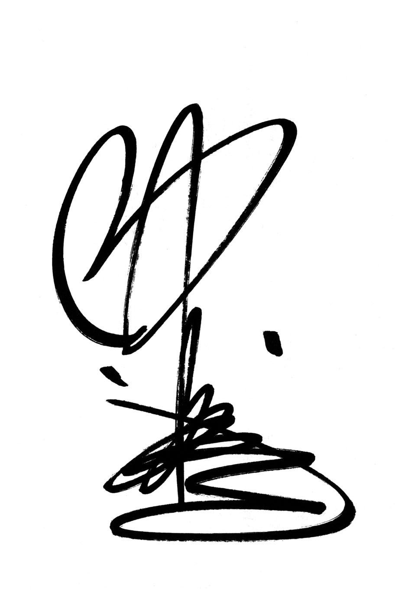

| 「大人の女」のマナー (PHP文庫) | |
| 中谷 彰宏 | |
| PHP研究所 (2001) | |

「大人の女」のマナー
中谷彰宏

●まえがき●
にわか雨のときにビニール傘を買わなければセンスはアップする。
あなたの家のゲタ箱には、どんな傘が入っていますか。
一度のぞいてみてください。
大事なお客さんが来られて、急に雨が降ったときにどういう傘を差し上げますか。
「どうぞこの傘をお持ちください」と言って、貸せる傘がありますか。
だいたいどこの家にも５００円の透明ビニール傘があります。
雨は、傘のないときに限って降ります。
「雨が降ってきたから仕方がない」と言って５００円の傘を買います。
買ったら10 分で雨はやみます。
ジャマだな、と思いながらも、家に持って帰ります。
また、５００円の傘ほど忘れないものです。
高い傘ほど忘れますし、お店に行ったら間違えられます。
なぜか５００円のビニール傘は、間違えられずに残っています。
こうして家の中に５００円のビニール傘がたまっていきます。
今度にわか雨に遭ったら、５００円の傘を買わずに、１０００円の傘を買ってみましょう。
たったそれだけの違いですが、勝負はそこで決まります。
５００円の傘を買わずに、１万５０００円の傘を買いなさい、と言っているわけではありません。
誰かに貸すときも、５００円の傘はなかなか貸しにくいから、この次使うことを考えて、もう少しいい傘にしておきます。
ここでの「もう少し」は、たった５００円ですが、全然違います。
５００円のビニール傘は、誰が見ても５００円のビニール傘ですが、１０００円の傘はちゃんとした傘です。
たったそれだけの差です。
にわか雨が降って傘を買うときの一瞬の判断で、ずいぶん変わってきます。
この差が、ただの「衣・食・住」から抜け出して、「遊・休・知・美」の世界へ入っていくためのマナーなのです。
「大人の女」のマナー ◆ＣＯＮＴＥＮＴＳ◆
「大人の女」のマナー
ビュッフェのマナー
ビュッフェも、コースのように食べる。
ビュッフェ・スタイルの食べ方を見ると、その人のマナーやセンスのレベルがよくわかります。
ビュッフェ・スタイルで食事をする機会が多くなりました。
コースの料理を食べるときは、その人のマナーの差は、それほどつきません。
ところが、ビュッフェ・スタイルの食事になると、一気に差が出ます。
あなたはいつもどういう食べ方をしているか、思い出してみてください。
オシャレな人はどういう食べ方をしているか、見てみてください。
ビュッフェ・スタイルでも、食べ方はコースと基本的には同じです。
外国へ行って、ホテルの総支配人とごはんを食べましょうということになりました。
ランチタイムでしたので、レストランはビュッフェ・スタイルになっていました。
「なんだ、総支配人と一緒にする食事がビュッフェなのか。けちったね」
と思ってはいけません。
その心理が、すでに、ビュッフェに対する油断を表しています。
海外では、ビュッフェ・スタイルの食事をとてもカッコよく食べます。
ビュッフェは、決して安いだけの食事ではないのです。
では、さっそく取りに行きましょう。
最初のお皿に前菜だけを取ってきます。
その後、メインディッシュを取り、そしてデザートを取ってきます。
その間、何回も席を立ちます。
１つのお皿に前菜とメインが一緒にのっていることはありません。
これが、正しいビュッフェ・スタイルの食べ方です。
海外のホテルでは、朝昼晩ビュッフェというホテルもあります。
「ビュッフェ」というフランス風の読み方は、日本には定着しています。
英語圏では「バフェ」と言わないと通じないこともあります。
日本人は、つい「バイキング・プリーズ」と言ってしまいます。
帝国ホテルが、最初に北欧風のバイキングのイメージで、「バイキング」という名前にしたのですが、外国では「バイキング・プリーズ」では、まず通じません。
「バフェ・プリーズ」あるいは、どうせならフランス式発音で「ビュッフェ・シル・ヴ・プレ」とフランス語で言わないと通じません。
ビュッフェへ行ったら、気持ちはわかりますが、いきなり取り始めないで、全体像を把握し、まず作戦を立てます。
あなたが自分で今日のお品書きをつくるのです。
お皿にやみくもにのせていったのでは、メチャクチャになります。
自分がメートル・ド・テルだったら、このお皿にどうきれいに盛るか、というレイアウトを頭の中でつくりながらのせていきます。
誰かのために取ってあげるとしたら、きれいに盛り付けることができますか。
商品として売れるくらい考えてください。
ここで、ふだんあなたがお客さんとしてレストランに行ったとき、どれくらい盛り付けに関心を持って食べているかがわかります。
ふだんから盛り付けに関心がないと、いざ自分でしようと思ったときに、オシャレにできないのです。
たいていの女性は、まずデザートに目がいってしまいます。
そうすると、いきなり前菜とメインとデザートが、同じお皿に山盛りになってしまいます。
別に、１回ですます必要はないのです。
ビュッフェは、何回席を立ってもいいのです。
オシャレな人ほど、席を立つ回数が多い。
オシャレでない人ほど、１回で全部盛ろうとしてしまいます。
前菜を２回取りに行ってもいいのです。
オシャレでないのは、一見おいしそうだからと山盛りにして、結局残してしまうことです。
お皿に少なく盛ることが、きれいに盛るコツです。
「これはおいしい」と思ったら、また行けばいいのです。
「これは何だろう」と思うメニユーもあります。
おいしそうに見えたけれども実は違っていたということもありますから、実際食べてみないとわかりません。
そういうとき残してしまうよりは、ちょっとずつ取っていくのです。
そうでないと、ビュッフェに来たのではなく、食べ放題に来たお客さんになってしまいます。
ビュッフェは、決して食べ放題ではありません。
ここが大きな違いです。
お寿司屋さんに行っても、オシャレな人はおしょうゆがお皿に残りません。
おしょうゆがお皿に残らない人は、おしょうゆをたくさんつけて食べているということではありません。
自分がどのくらいおしょうゆをつけるか、自分の食べる全体像が把握できているから、食べ終わった後がきれいなのです。
ムリして全部食べる必要はありません。
自分のおなかの調子に合わせてメニューをオーダーし、それに合わせて、おしょうゆをついでいるのです。
ビュッフェの楽しみは、いろいろなものが少しずつ食べられる、ということです。
好きなものを少しずついろいろ食べるということであって、決して「もとをとる」ということではありません。
オシャレな食べ方をしている人のスタイルを見て学んで帰るのが、本当の意味でのもとをとるということです。
ビュッフェ・スタイルのレストランほど、勉強になるところはありません。
僕は、取ってあげて盛り付けるのが大好きです。
盛り付ける前に、一緒に回って、好みをききます。
盛り付けは、食べ物だけでなく、そこに花があったら添えてもいいのです。
自分がシェフになったつもりで、そこに絵を描くつもりで、見た目にもきれいな形にしていきます。
これが、ビュッフェのマナーなのです。
オシャレな生き方・センスある生き方
ゴミは、ゴミ箱がいっぱいになる前に捨てる。
その人の生き方のセンスは、オシャレなコーナーにあるジュエリーボックスを見てもわかりません。
でも、ゴミ箱を見ればだいたいわかります。
ホテルの場合でも、そのホテルがどれだけセンスがいいかは、ゴミ箱を見ればわかります。
先日、ルイ・ヴィトンのスペシャルオーダーの受注会がありました。
自分の好みで、「こういうものをつくってほしい」とオーダーすると、だいたい８カ月ぐらいでつくってくれます。
僕は、デスクまわりのステーショナリーをルイ・ヴィトンのタイガでひと通りそろえています。
傘まで買いました。
「中谷さん、ゴミ箱がありますから、ぜひ」と言われました。
ルイ・ヴィトンのタイガのゴミ箱なんて、もったいなくて使えない、と思いながらも面白いなと思いました。
別にルイ・ヴィトンのゴミ箱が問題なのではありません。
ちょっとあなたの部屋のゴミ箱を見てください。
あなたのセンスをアップするポイントは、ゴミ箱の外側のつくりではありません。
ゴミ箱の中にたまったゴミを、どの段階で捨てるか。
ここに個人差が出ます。
普通の人は、ゴミ箱がいっぱいになったら捨てます。
だらしない人は、山盛りになってこぼれてきたから「仕方がない」と言って捨てます。
ゴミの回収日の前日に捨てる、という人もいます。
だいたい前日には、ゴミがあふれている状態です。
この差は、自分では絶対に気がつきません。
ゴミを捨てようか、いや、いっぱいになっていないから、まだ捨てなくていい、と考えます。
「遊・休・知・美」の世界に生きている人は、ゴミ箱がいっぱいになる前に捨てます。
この差です。
ゴミ箱がいっぱいになったら捨てるという人は、別にだらしないわけではありません。
ところが、この段階で捨てようと考えているとやや手遅れで、あふれてしまうことが多いのです。
あなたの意識の中では、そろそろいっぱいだから捨てなくてはと思っても、その間にもゴミは出ます。
ここで、時差が発生します。
実は手遅れになっていることに本人は気がつきません。
独身の方は、相手の男性がどういう暮らし方をしているかがわからないと、結婚しても、ゴミ箱の使い方ひとつで離婚になる可能性があります。
逆の場合もあります。
相手が猛烈にセンスのいい人だったら、「これ、なんとも思わない？」と言われてしまいます。
サラリーマンは、ゴミを自分で捨てる習慣はなかなかありません。
会社では、ちゃんとゴミを集めてくれる人がいます。
家に帰れば奥さんや家の人が捨ててくれますから、ゴミを自分で捨てる習慣がどんどんなくなります。
自分の部屋の身近にあるゴミ箱に、ゴミをいつまでもため込んでしまいます。
だんだんゴミの分別が細かくなって、今、港区では、新聞・雑誌とチラシはきちんと分けてくださいということになりました。
面倒くさいけれども、面倒くさいからといってゴミを残しておくと、結局家の中にゴミはたまっていきます。
モノを減らすほうが、オシャレな生き方です。
モノの中には、結構ゴミが多いのです。
冷蔵庫を見れば、その人のセンスがだいたいわかります。
冷蔵庫の中の半分はゴミだと言われています。
東京電力の「でんこちゃん」に叱られそうなモノがいっぱい入っています。
うわーっという怪しいモノが奥のほうから出てきます。
かつて、衣食住をどうレベルアップしていくかを目標にしていた時代は、大きな冷蔵庫にモノが満杯に入っていることがオシャレでした。
でも今は、半分はゴミなのですから、冷蔵庫に満杯にモノが入っているのはオシャレではありません。
冷蔵庫のない人のほうがオシャレな生き方をしているかもしれません。
冷蔵庫がなくても、必要なときにはコンビニに買いに行けばいいのです。
かつて、「三種の神器」と呼ばれていた冷蔵庫ですが、今やなくても生活していけます。
これが都市型のライフスタイルです。
冷蔵庫がないからといって、貧しいということではありません。
冷蔵庫に入れる食品をゴミにしない生き方をしていくことが大事です。
かつては、ゴミがたくさん出ることが豊かな暮らしでした。
ドイツへ行きますと、ゴミ箱がやたら小さいことに驚きます。
しかも、ゴミを回収に来るのが週に１回です。
ゴミをできるだけ出さない生き方が、より豊かな生き方です。
お金持ちの生き方というのではありません。
衣食住だけにこだわるとしたら、これはただのお金持ちの生き方です。
それに対して「遊・休・知・美」の世界のリッチは、「豊か」ということです。
あなたの人生へのマナー
バッグの中に、グチを入れて持ち歩かない。
あなたのバッグの中から捨ててほしいものが３つあります。
１つ目は、グチ。
せっかくのブランドのバッグに、グチやねたみ、やきもちを入れている人がたくさんいます。
２番目は、ねたみ。
３番目は、やきもち。
この３つを、あなたのバッグの中から捨ててください。
そうしないと、あなたの人生は、バッグにグチとねたみとやきもちをたくさん持っている人とばかりつきあっていくことになります。
これらを捨てて、かわりに新しく２つのものを入れることによって、あなたの人生は違ってきます。
それは、「サービス」と「マナー」です。
これは、会社でも学校でも教えてくれません。
自分で勉強して、身につけていかなければいけません。
サービスとマナーをバッグの中に入れれば、グチとねたみとやきもちはなくなります。
グチとねたみとやきもちの世界でいくら頑張っても、しょせんその中でトップになるだけです。
こんなつまらないことはありません。
あなたが住んでいる世界から早く抜け出して、あなたの世界を変えなければいけません。
いいマナーに、いいサービス
グチとねたみとやきもちの世界から抜け出すには、夢を持つ。
サービスとマナーは、１つのものを両側から見たものです。
根本的に、どうすればあなたの大切な人に喜んでもらえるか、幸せを与えることができるかがマナーの基本です。
サービスとマナーは共通のものです。
ただ違うのは「立場」です。
ホテルに行ったときは、あなたがお客さんで、ホテルの人がサービスをする側です。
ホテルの人は、お客さんに対して喜んでもらうことがサービスです。
それに対して、お客さんの立場に立ったときに覚えておかなければいけないマナーとは、「どのように喜ばせていただくか」ということです。
いいマナーを持っていないと、いいサービスは受けられません。
いいマナーを持っているお客さんが来たら、いいサービスをしなければなりません。
サービスとマナーは車の両輪です。
両方よくなっていくこともあるし、両方悪くなっていくこともあります。
片方はいいけれども、片方はダメ、ということはありません。
「この店はサービスが悪い」と言って怒る前に、あなたのマナーはどうか考えてみてください。
あなたは、自分のマナーのレベルに合ったサービスを受けることができます。
いえ、自分のマナーのレベルに合ったサービスしか受けることができないのです。
サービス業をしている人は、サービスをすることを覚えなければいけません。
サービスをする人も、どこかでお客さんになることがあります。
お客さんの立場に立たないと、サービスは覚えられません。
お客さんの側に立たないと、マナーを覚えることはできません。
いいサービスのできるサービスマンは、いいマナーを持っているお客さんなのです。
ブランドショップのマナー
ブランドショップは、マナーでお客さんを選んでいる。
一流のお店の店員さんは、マナーがいい。
一流のお店のお客さんとして好かれるには、お客さんの側にもマナーがなければならないのです。
マナーは、買い物をすることでも磨かれます。
買い物をしながら、大人の女のマナーを磨きましょう。
パリのあるブランドショップで、こんな光景を見ました。
ある日本人の女の子３人組が、商品をあちこち触って、キャーキャー言いながら何かを探していました。
店 員 「何か、お探しですか？」
女性客 「......」
彼女は、黙ったまま探しています。
女性客 「これくらいの、でっかいやつ」
彼女は、大声の大阪弁で説明しました。
店 員 「こちらにカタログがございますが」
女性客 「うわー、本場で買うと、安 っすいわー。これやこれ。日本で、これ一番流行ってるんですよ」
店 員 「あいにくこちらは、品切れでございますが」
女性客 「高飛車な店やな。年に１０００万円以上買う上客と差別して。イヤな店」
という捨てゼリフを残して、３人組は、結局買わずに出ていきました。
これを読んであなたはどう感じるでしょうか。
この店は、お客さんを差別する店なのでしょうか。
お店はお客さんを選びます。
そのブランドの雰囲気に合ったお客さんに、着たり持ったりしてほしいから当たり前です。
お店は、たくさん買うかどうかでお客さんを差別するのではありません。
ちゃんとブランドにふさわしいマナーがあるかどうかで、お客さんを選んでいるのです。
これは、外国だけではなく、日本でも同じです。
大人のお客さんになるためには、18 のマナーがあります。
【第１条】挨拶をされたら、返事をする。
お店の人に「いらっしゃいませ」と声をかけられたら「こんにちは」「拝見します」と返事をするだけで、もう１回戦クリア。
ほとんどの人が、挨拶されても、目をそらして店に入っていきます。
実は最初の挨拶で、お店の人は、お客さんを選んでいるのです。
【第２条】１人で行く。多くても２人まで。
大人の女性は、３人以上で買い物をしない。
３人以上で入ってくるお客さんは、迷惑な冷やかしだと判断されてしまいます。
【第３条】大声で、話さない。
ブランドショップに行くと、ついテンションが上がってしまいます。
一流のショップは、静かなはずです。
せっかくのお店のムードを壊してはいけません。
目の前の店員さんに聞こえればいいのですから、静かに話すこと。
３人以上で行くと、つい大声になってしまうのです。
だから３人以上で行ってはいけないのです。
赤ちゃんを連れていくのも、論外。
お母さんが買い物に夢中になって、赤ちゃんが号泣しているのを見たことがあります。
【第４条】走らない。
興奮して、幼稚園児になってしまう人がいます。
当たり前の話ですが、結構多いのです。
【第５条】まず、探しているものを店員さんに告げる。
自分で探してから、たずねるのではありません。
入り口のところで「スカーフを探してるんですが」と言うと、いいお客さんだと見てくれます。
特に目的のものがないときは「ちょっと、拝見します」でいいのです。
【第６条】商品は、勝手に触らない。
「どうぞ、お手に取ってごらんください」と言われるまで、触ってはいけません。
これが一番大事です。
商品は、まだあなたのものではないのです。
革製品やエナメル製品は、汚れや指紋がつきやすい。
店員さんは、手袋をして、商品を取り扱っているのです。
ガラスケースを勝手に開けようとしている豪傑もいます。
手に取れるところでも「拝見していいですか」とひと言言うと、「おや、このお方は」と一目置かれます。
【第７条】手を洗っていく。
店員さんは、こっそりお客さんの手を見ています。
商品を汚されたくないだけではなく、手を見れば、お客さんがわかるからです。
【第８条】カジュアルすぎる服装では行かない。
特にそのブランドの服である必要はありません。
せっかくインテリアに凝 って、オシャレな空間をお店の人はつくり上げているのです。
それを壊すお客さんには、入ってきてほしくないのは当たり前です。
【第９条】小さな荷物でも預ける。
ショルダーバッグが、食器や小物に当たっていても、平気な人もいます。
カバンを、商品の上に平気でのせている人までいます。
「お荷物、お預かりしましょうか」というのは「迷惑なんですけど」という注意なのです。
【第10 条】試着は、口紅やファンデーションがつかないように。
厚化粧の人が、試着室に入ると、店員さんはハラハラしているのです。
【第11 条】ちゃんとした下着で行く。
なにげなくあなたの下着は見られて、判断されています。
靴を買うときは、ストッキングに注意。
もちろん、足や指のお手入れも。
【第12 条】食品を持ち込まない。
ガムをかみながらというのも、最低です。
【第13 条】靴を磨いていこう。
店員さんは、あなたの着ているものよりも、靴が磨かれているかどうかで、あなたを判断します。
【第14 条】わからないことはきく。
スカーフの結び方などは、教えてもらえばいいのです。
勝手に変なことをされてシワになると、お店にとっては迷惑なのです。
【第15 条】店を出るときにも、挨拶。
あなたがお客さんの側でも「ありがとうございました」を忘れずに。
買っても買わなくても「ありがとうございました」。
【第16 条】支払いは、カードでする。
ちゃんとした人は、現金を持ち歩かない。
サインするので、名前を覚えてもらえます。
【第17 条】店員さんの名前を覚える。
「□□さん」と呼びかけるだけで、店員さんもあなたのことを覚えてくれます。
【第18 条】次回から指名で予約を入れる。
電話で担当の方を呼び出して、直接「□□ですが、今日、□□時頃、バッグを見せていただきたいんですけど」と予約を入れる。
そうすれば、限定の１点物でも出してくれるはずです。
次回から、あなたは特別のお客さんになれます。
買う側のマナー
マナーがいいお客さんは、買ってくれなくてもうれしい。
買う側にもマナーが必要なのです。
どんなにたくさん買っていただいても、マナーの悪いお客さんは嫌われます。
特に、高級ブランドの品物というのは、１点物とか限定物がたくさんあります。
これが１つ売れたら、次にその商品が入ってくるまで、半年先になるか、１年先になるかわからない物が多いのです。
たくさん買ってくださるけどマナーは悪いという人に、１点物が買われてしまった。
その後に、すごくマナーのいい、感じのいいお客さんが来られてカタログを見て、「この商品ないですか」と言われたときに、やはり心痛む思いをすると、あるスタッフの方はおっしゃっていました。
あなたが、もしサービス業をしているなら、そういう経験があると思います。
ソムリエも同じです。
それこそ１本しかないというようなビンテージのワインがある。
高ければいい、酔えればいいというお客さんが来られて、「一番高いの、ちょうだい」と言われても、いいワインは絶対に出さないのだそうです。
マナーのよくないお客さんには、値段は高いけど、まあまあどこにでもあるようなワインを出すのです。
これは、別にぼったくっているわけではなく、そういうものなのです。
そのお客さんが本当にワインが好きで、感じのいいお客さんだったら、赤字を出してでもとは言いませんが、原価でもぜひ飲んでいただきたいと思って、薦めるのです。
ところが、お客さんは、そういうふうにされていることがわからないのです。
これは怖いことです。
たくさん買っているから好かれるとか、そんなことは決してありません。
「お金を払ったのだから、自分は客だ」といばっても、本当のお客さんにはなれないのです。
本当の「お客さん」と呼ばれるのは、地位が偉くなることでも、お金をたくさん払うことでもありません。
お客さんとしてのマナーを知り、お店の人に好かれる立ち居ふるまいができないとダメなのです。
売っている人も、買う側も同じ人間です。
友達づきあいと同じで、対等なのです。
買う側がお金を払って、店員さんが奴隷になるわけではないのです。
そこで友達同士になりますと、サービスしてもらえるのです。
つまり、サービスをしてもらうためには、サービスをされる側にも、守らなければいけないルールがあるのです。
ルールを守っておかないと損なのです。
これが文化です。
ところが、こういうことは学校では教わらない。
では、会社で教えてくれるかというと、会社でも教えてくれない。
もし、あなたがサービスしている側だったら、わかるようになるのです。
あなたがウエイターをやっていたら、お客さんにこうしてもらえれば、ウエイターとしては一番うれしいということを、あなたがお客さんになったとき、すればいいのです。
マナーを守るということは、ガマンするということではありません。
そんなことを言ったら、飛行機でも、リクライニングシートはずっと倒せなくなってしまいます。
サービスしている側の人は、お客さんにガマンされたらうれしくありません。
お客さんがどういうことを望んでいるかをはっきり言ってもらうことによって、リクエストに応じることができるのです。
それでお客さんに喜んでいただければ、スタッフもハッピーなのです。
サービスをする側と、サービスを受ける側の両方が、ハッピーになるために、マナーが必要なのです。
クローゼットのマナー
新しい服を買うより、ブラシを１つ買おう。
クローゼットを見ると、その人のファッションのセンスがわかります。
マナーは、人に対してだけではありません。
モノに対するマナーもあるのです。
人に対してのマナーを知らない人は、モノに対するマナーも知りません。
あなたの大切にしているモノに、マナーを持って接していますか。
たとえば、洋服です。
そろそろ新しい洋服を買おうかなと思っていますね。
あなたの部屋のクローゼットに、洋服ブラシがありますか。
洋服を新しく１着買う気持ちがあったら、まず「洋服ブラシ」を１つ買いましょう。
そうすれば、あなたのファッションセンスは格段に上がります。
洋服ブラシなんて、洋服に比べれば安いものです。
もしホテルに泊まったら、ブラシがあるか、見てください。
いいホテルには、クローゼットに洋服ブラシが入っています。
外から帰ってきたときに、自分が着ていた服にブラシをかけてあげる。
この気持ちひとつで、その人の洋服のセンスは磨かれます。
帰ってきて、脱ぎ捨てた服が、椅子の上に相互に積み重なっていませんか。
今度着ていこうと思ったときに、お目当ての服がクローゼットに見当たらないと思ったら、積み重なった服の下のほうにあった、ということはありませんか。
脱ぎっぱなしになっていたものを着たのでは、その人が、高級ブランドの洋服をどんなにたくさん持っていても、ファッションセンスは磨かれません。
服をたくさん持っているから、そんなにたくさんたまるのです。
どんなにカッコいい服でも、１度着れば、１日の汚れは服についています。
積み重ねておいたら、シワになってしまいます。
汚れはその日のうちに落としておかないと、張りついてしまうのです。
たしかに疲れて家に帰ってきたとき、そのままゴロンとなりたいことがあります。
「今日はイヤなことがあった。店に行ったらサービスが悪かった。ふー」
その１日のイヤなことを「それでも頑張ったね」と洋服にブラシをかけてあげて、ふるい落とす。
花に話しかけるように、洋服に対して、いたわりをもって話しかけてやる。
それはあなたの気持ちです。
こういうことができると、「こんなところにごはん粒がついている」と、発見することもあります。
今度その服を着たとき、ごはん粒をつけたままデートに行かなくてすむ。
出る直前に、積み重なった洋服の山からバッと抜いて着てしまうのはダメです。
これは靴のブラシでも、洋服のブラシでも同じです。
洗面台にヘアブラシのない人はそんなにいないと思います。
ところが、クローゼットの洋服のブラシは、意外にないのです。
洋服ブラシをかけないのは、寝起きの頭で出かけるのと同じなのです。
洋服ブラシのないわりには、洋服は多いのです。
捨てられない洋服や、買ってきても着ていない洋服がたくさんあって、クローゼットはハンガーが入らないくらい、ギューギューです。
センスのいい人のクローゼットはすいています。
モノは少ないのですが、少ないなりに、上手な組み合わせを考えているのです。
同じジャケットでも、インナーを変えるだけで変わってきます。
ベストやシャツとの組み合わせ方は無限にあります。
センスのない人は、ワンパターンですから「あ、あの人、あれをまた着ている」と言われてしまいます。
いい服を買っても、友達の結婚式に１回着て行ったら、終わりです。
高かったのに、もう着れない。
「またあれを着ている」と言われるから、何着も新しいモノを買う。
費用はかかるし、クローゼットもどんどん狭くなる。
洋服にかける家賃は大変なものです。
しばらく間をあけて、久しぶりに出してみたら、風通しが悪かったために、虫に食われているという状態になってしまうのです。
高級クリーニングに出せばいいじゃない、と言うかもしれません。
でも、クリーニングの出し過ぎは、洋服の寿命を縮めるのです。
高級クリーニングに何回も出すなら、帰ってきて、軽くブラシをかけてあげるだけで、洋服も長持ちします。
もし、あなたの家に誰かが泊まりに来たとします。
そのときに、ハンガーにかけながら、そっとブラシをかけておくのです。
翌日、その洋服を着るとき、その人は、きっと何かが違うことに気づくでしょう。
わざと目の前ですることはありません。
見えないところでするのです。
マナーには、２種類あります。
目の前でするマナーと、見えないところでするマナーです。
見えないところでするマナーのほうが、あなたをより魅力的にするのです。
マナーとは、毎日、心にブラシをかけることなのです。
マナーの極意
きげんの悪いときにこそ、マナーは必要。
マナーを覚えるには、どこに行けばいいのでしょう。
たとえば、ホテルは、マナーを覚えるのに一番いいところです。
いろいろなホテルマンがいます。
お客さんも、外国の方も、ＶＩＰもいる。
そういう方の立ち居ふるまいを見て、「ああ、こういうふうにするとカッコいいんだ」と覚えていくのです。
そういうときに、見方が２通りに分かれます。
「あの人、高い服を着ているな」
「あの人の持っているブランドのバッグは値段が高いな」
モノに目がいっているうちは、人間は成長しません。
一瞬はそれでもいいのですが、１分だけにしましょう。
１分たってもそこに目がいっていてはいけないのです。
１分たって、しぐさ、立ち居ふるまいに憧れるようになっていたら、あなたはどんどんカッコよくなります。
「あの人の今のおじぎの仕方、カッコいいな」
「あの人の今の席の立ち方、カッコいい」
「名刺の渡し方、受け取り方、会釈の仕方、ああいうふうにできるようになるといいな」
いくらいいモノを持っていても、カッコよくはなれません。
逆に、いいモノを持っていれば持っているほど、しぐさや立ち居ふるまいがカッコ悪かったら、もっとアンバランスで、カッコ悪いのです。
こういうことを勉強できるのが、ホテルのいいところです。
悪い結果が出たとき、悪いしぐさをしない。
ふだんはオシャレな人でも、突然、悪いしぐさをして、はたで見ていると、驚くことがあります。
ふだんオシャレなぶんだけ、そのギャップの大きさに驚かされてしまいます。
どんなにふだんオシャレでも、ちらりとでも悪いしぐさが見えてしまうと、悪いほうが、本当の姿だ、と思われてしまいます。
たとえば、タクシーの運転手さんに、「すみません、近くで恐縮なんですけれども、駅までお願いします」と言ったとき、「チェッ」と言われるとイヤですね。
こんなにつらいことはありません。
ワンメーターの距離でタクシーに乗って、タクシーの運転手さんが「チェッ」と言ったら、イヤな気持ちになります。
「嫌われるようなこと、何かしたかな」と、気をつかってしまいます。
たいていは、あなたのせいで、タクシーの運転手さんも、「チェッ」と言ったのではありません。
何かほかにムッとすることがあったのです。
ふだんから、悪いしぐさを、やってはいけないのは当たり前です。
でも、ふだん悪いしぐさをしない人でも、時として、してしまうことがあるのです。
大事なことは、悪い結果が出たときに、悪いしぐさをしないことです。
きげんのいいときはいいしぐさだけれども、きげんの悪いときは、急にぞんざいな態度というのでは、マナーのある人とは言えません。
きげんの悪いときにこそ、マナーは必要なのです。
きげんの悪いときにこそ、その人のオシャレさの差が出るのです。
常日ごろ悪いしぐさをしていると、悪いしぐさは出やすくなります。
毎日の生活の中では、時には、悪い結果が出ることもあります
思っていたとおりにならなかったときにでも、絶対悪いしぐさをしないように気をつけることです。
きげんの悪いときに悪いしぐさが出ないようになれば、ふだんのあなたのしぐさは、オシャレになります。
女性の１人外食のマナー
男性と食べている女性より、１人で悠然と食事している女性のほうがカッコいい。
「喫茶店で１人でコーヒーを飲んでいる女性を見つけ、なぜそこにいるのかを心配する会」という会を、井狩春男さんがつくられたので、僕も入会をお願いしました。
たしかに、女性が２人ではなく、１人でいると、なんだか気になります。
喫茶店ならまだいい。
レストランで１人となると、かなり気になります。
なぜなら、レストランで１人で食事をしている女性は、間違いなく「いい女」だからです。
「大人の女」だからです。
大人の女にならなければ、レストランで１人で食事をすることはできません。
職場でキャリアを積んでいくと、必然的に１人で食事をしなければならないことも増えてきます。
「１人じゃ食事できないのよね」と言いながら、どうでもいいような男性をパートナーに選ぶような女性は、いつまでたっても大人の女になることはできません。
昼休みにあわててかきこむような店ではなく、デートで行くような高級店で、１人で食事をするときのマナーを伝授しましょう。
【第１条】１人で食事をすることは、大人の女になるための修行と心得る。
大人の女が１人で食事をするのは、相手がいないからではありません。
女を磨くための修行です。
【第２条】悲壮感が漂ってはならない。
堂々としていると、ポリシーを持って、１人で食べているんだなということがわかります。
暗い顔で食べていると、ただ相手がいない寂しい女性になってしまいます。
【第３条】まわりのプレッシャーに負けてはならない。
１人で食べている女性は、目立ちます。
だからいいのです。
まわりの女性客が、あなたのことを見て、囁 きあって笑っても、羨望のまなざしと解釈しましょう。
笑われていると気になりだしたら、あなたの負けです。
【第４条】リラックスしながら、緊張感を持とう。
リラックスすることは、緊張感をなくすことではありません。
だらしなくなってはいけないのです。
【第５条】男性と食事をしているときより、もっとエチケットに気をつけよう。
男性と一緒のときは、おのずとエチケットを守ろうとします。
男性の視線を気にするからです。
１人で食事をするときは、気にしなければならない視線がないのではありません。
ほかのお客さん、お店の従業員さん、すべての人の視線を気にしなければならないのです。
男性と食べるより、１人で食べるほうが難易度は高いのです。
【第６条】入門は、ホテルのレストランから。
１人で食事をするとき、一番抵抗が少ないのはホテルのレストランです。
最終的には、１人でちゃんこ鍋まで食べることができるようになれば卒業です。
【第７条】混んでいるときはカウンターに、すいているときはテーブルに。
ランチタイムで混んでいるのに、広いテーブルに座ろうとするのは、お店の人に嫌われます。
かといって、カウンターばかりに座っていると、修行になりません。
みんなに背を向けるカウンターより、みんなのほうを向くテーブルのほうが難易度が高いからです。
【第８条】足を組みながら食べない。
これは、１人でも２人でも同じです。
意外に足を組みながら食べているみっともない人が少なくありません。
手持ちぶさた足持ちぶさたで、つい足を組んでしまうのです。
足を組みながら食べているようでは、次回来たとき、決していい席を取ってもらえません。
【第９条】お店のテンポに合ったスピードで。
ジャンルによって、お店のテンポがあります。
早く食べろとか、ゆっくり食べろという問題ではありません。
おそば屋さんには、おそば屋さんのテンポがあります。
おそば屋さんでは、さっさと食べないと、みっともない。
フレンチレストランには、フレンチレストランのテンポがあります。
店が高級店かカジュアル店かということでも違うでしょう。
どんなお店でも、そのお店のテンポに合わせるということが大切です。
【第10 条】待っている人がいるときは、あける。
待っている人がいるのに、食べ終わって、タバコをのんびり吸っている人がいます。
タバコを吸うことがいけないのではありません。
状況を把握できないのがいけないのです。
【第11 条】手持ちぶさたにならない。
話し相手がいないので、手持ちぶさたになります。
本を読む、手帳を見る、まではいい。
手持ちぶさただからといって、キョロキョロするのはいけません。
携帯電話をかけるのは、論外。
頻繁にタバコを吸うのも、ただ間を埋めるためだったら、マイナスです。
【第12 条】何もしなくても、間が持つようになって一人前。
コース料理の場合、お皿とお皿の間が難しい。
その間に、悠然としていることができたら一人前です。
そのとき、その人は、お店のインテリアとして溶け込んでいます。
１枚の絵になっているのです。
レストランで一番カッコいいのは、素敵な男性と食事をしている女性ではありません。
１人で悠然と食事を楽しんでいる女性が、一番カッコいいのです。
おごられるマナー
おごられながら、いい女になっていく。
いい女だから、おごられるのではありません。
おごられるから、いい女になっていくのです。
おごられることも女にとっては、修行なのです。
食事をしても、子供のうちは割り勘ですみます。
大人になると、割り勘というわけにはいきません。
おごられるマナーを覚えなければ、大人の女とはいえません。
おごってもらうのは、うれしいけれど、難しいのです。
おごってもらって、ただ能天気に喜んでいるのは、まだまだ子供です。
おごられるのが、難しく感じてきたなら、大人の女になりかけている証拠です。
でも、難しいままではいけません。
おごられながら、おごられるマナーを覚えていかなければならないのです。
【第１条】リスクをともないながら、おごられるマナーを覚えよう。
おごられるのは、当然リスクをともないます。
おごる男の中には、見返りを当然のように求めてくる男もいるからです。
リスクがあるから、おごられるマナーを覚えることができるのです。
割り勘にしていれば安全です。
でも、リスクを回避して、安全な方法ばかりをとっていたら、いつまでたっても、マナーを覚えることもできなければ、大人の女になることもできません。
【第２条】男性のプライドを傷つけない。
おごられるより、おごるほうがカッコいい。
そのカッコよさを味わわせてあげるのが、おごられる側のマナーです。
おごるという好意は、金銭的な好意ではなく、心の問題なのです。
【第３条】ムリに払いますと抵抗してはいけない。
食事に誘われたら、おごってもらう覚悟でいいのです。
ただし、感謝を忘れないように。
誘われているのに、ムリヤリ払いますという押し問答をしたら、逆に男性のメンツをつぶしてしまうことになってしまいます。
【第４条】おごられることに抵抗を感じるなら、誘われた時点で断る。
嫌いな人からは、おごってもらいたくないでしょう。
だったら、おごられたくない人と、どうして食事なんかしているのですか。
誘われたときには、気持ちよくおごってもらえる人とだけ、食事をしましょう。
【第５条】一応財布を出すしぐさなんてしなくていい。
財布を出すしぐさよりも、気持ちのいい「ごちそうさま」のほうが、ごちそうしたほうはうれしいのです。
【第６条】お返しなんてしなくても、感激することで、お返しになっている。
男性が、もっとも求めているのは、金銭を負担してもらうことではありません。
あなたに感激してもらうことなのです。
「わあ、おいしい」「わあ、すてき」「こんなの初めて」「これ何？」という、あなたの大きな反応が、立派なお返しなのです。
こっそりお札を渡すなんてしなくていいのです。
【第７条】感謝は、５回言う。
支払いをしたときに、ごちそうさまでした。
店を出るときに、ごちそうさまでした。
別れ際に、ごちそうさまでした。
その日の夜、電話で、今日はごちそうさまでした。
次に会ったときに、この間は、ごちそうさまでした。
ごちそうさまでしたを言いすぎて、嫌われることはありません。
【第８条】「また連れてってね」を忘れずに。
「今度は、私が払います」なんて言う必要はありません。
それでは、おごっていることにならないのです。
それよりは、「また誘ってね。今度はいつ？」と甘えたほうがいいのです。
【第９条】おごられたからといって、もう１軒つきあう必要はない。
もう１軒つきあうかどうかは、おごられたかどうかには関係ないのです。
行きたければ行けばいいし、行きたくなければ行かなければいいのです。
中途半端に期待させると、印象が悪くなります。
【第10 条】領収書をもらう。
仕事の打ち合わせなのに、相手の男性が、見栄を張って領収書をもらわないこともあります。
そういうときは、念のため、あなたが領収書をもらっておくこともできます。
【第11 条】複数で行ったときは、誰が払ったか覚えておく。
最悪なのは、ごちそうさまと言いながら、誰が払ったか、わからなくなっていることです。
払った人をちゃんと覚えておいて、その人にごちそうさまを言いましょう。
【第12 条】支払いの前に、トイレに行っておこう。
支払いのときにトイレに行ったら、支払いを押しつけたように見えてしまいます。
大勢でいるときは、誰が払ったかも、わからなくなります。
支払いのときにトイレに行きたくならないように、支払いの前にすませておきましょう。
【第13 条】おごられ方は、おごることで覚える。
おごられる側ばかりだと、おごられるマナーは覚えることができません。
たまには、おごる側にまわってみましょう。
年上の人からは遠慮なくおごってもらっていいのです。
そのかわり、後輩にはおごってあげましょう。
おごってあげることもしている女性は、おごる側の心理がわかるので、おごられるマナーが身につくのです。
【第14 条】おごられるマナーは、４つのＫが必要。
４つのＫとは、感激・感謝・観察・記憶です。
金銭が入っていないことに、気をつけましょう。
デートの最中の携帯電話のマナー
携帯電話は、化粧と同じ。 大人の女性は、しているところを見せない。
大人の女性が、携帯電話をかけているところを、あまり見かけません。
携帯電話を持っていないのではありません。
携帯電話をかけているところを、人に見せないだけなのです。
【第１条】デート中には、携帯電話は切っておく。
お子様の女の子の携帯電話には、ひっきりなしにかかってきます。
たとえ、デートの最中でも、携帯電話に平気で出ます。
そして、こう言うのです。
「ううん。平気」
お子様の女の子は、自分がいかに恥ずかしいことをしているかに気づいていないのです。
こういうことをしていると、大人の男性には、２度と誘ってもらえなくなってしまいます。
デートの最中でも携帯電話に出るというのは、「自分は、こんなに忙しいのだ」ということを、相手にアピールしたいという自己顕示欲が働いています。
ところが、相手に伝わるのは、まったく逆のことなのです。
「１本の電話もムダにしたくないというほど、この子にかかってくる電話は、少ないんだな」と、思われてしまうのです。
仕事をバリバリしているところを相手にアピールしようとか、ほかの男性と仲良くしゃべっているところを見せて、やきもちを焼かせようという手が通用するのは、お子様の男の子だけです。
デートの前には、携帯電話の電源を切っておきましょう。
電波の届きやすい方向をチェックして、テーブルに置いておくなんて、大人の女性のすることではありません。
【第２条】デート中に携帯電話が鳴っても、出ない。
万が一、デートの前に携帯電話の電源を切り忘れて鳴ってしまったらどうするか。
あなたの携帯電話が鳴ったら、デートの相手の男性は、大人ですから「どうぞ」と言ってくれます。
だからといって、油断してはいけません。
「いいの」と、辞退しましょう。
「大事な用かもしれないよ」
「あなたとのデートのほうが、大事だもの」
鳴り終わったら「電源を切っておこう」と言うチャンスです。
「さあ、これでもうジャマされないわ」
【第３条】かけていないようで、ちゃんとかけている。
本当に大事な電話なら、留守電にメッセージが残るはずだから大丈夫です。
大人の女性は、携帯電話を使わないと言ってるんじゃないですからね。
大人の女性は、携帯電話の使い方が洗練されていると言ってるのです。
お化粧直しのときに、こっそりチェックすればいいのです。
大人の女性は、いつ電話をかけているのかわからないうちに、ちゃんとかけているのです。
かけていないようでいて、ちゃんとかけているのです。
【第４条】彼は、あなたの話し方を聞いていることを忘れずに。
どうしてもデートの最中に、彼の前で電話に出なければならないときは、どうすればいいのでしょうか。
そのときは、まず話し方に注意することです。
電話の相手は、いつものようなくだけた話し方で話してきます。
それに巻き込まれてしまうと、つい、あなたまでくだけた話し方になってしまいます。
電話の話し方ほど、無防備になるものはありません。
それまで、どんなにお上品に話していたとしても、電話でばれてしまいます。
心配しなくても、話の内容は聞かれません。
話し方を聞かれてしまうのです。
【第５条】デートの最中に、携帯電話での長話は論外。
デートの最中だというのに、平気で長話をする人がいます。
基本的には、緊急の場合しか出てはいけないのです。
緊急の場合の電話で長話になることはありません。
緊急の電話ほど、短くすませることができます。
あなたが、１分と感じるとき、実際には３分たっています。
そして、聞いている相手は、５分に感じてしまいます。
【第６条】デートの相手以外の人の迷惑にもならないように。
目の前の彼だけに迷惑にならなければいい、ということではありません。
レストランやホテルのような場所では、ほかのお客さんにも迷惑にならないようにしなければなりません。
あなたがマナー違反をしているとき、白い目で見られるのは、あなたではなく、一緒にいる男性なのです。
【第７条】「今、デートの最中だから」と宣言して切る。
もうワンランク上の手もあります。
わざと電話に出て、「今、恋人とデートの最中だから。またかけてください」と言う手です。
デートではなくて、仕事のミーティングランチなら、「後ほど、こちらからかけ直します」でいい。
でも、デートなら「後でかけ直します」ではなく「またかけてください」と言ってくれたほうが、僕がデートしている側だったらうれしいです。
自分と別れた後、ほかの人にかけ直されるというのは、あまり気持ちのいいものではないですからね。
電話をかけてきた相手を利用して、デートをしている相手を口説いてしまうのです。
「今夜は、帰れないかもしれないから、明日以降に、またかけてください」
と、さらっと言ってみてはどうでしょうか。
お酒を飲むときのマナー
シラフは、酔っ払いよりもシラける。
ワインの知識がどれだけあっても、お酒の飲み方のマナーをわきまえない女性は、大人の女性ではありません。
女性が男性と一緒に仕事をするようになって一番困っているのが、ノミニケーションです。
日本の会社ではあいかわらず、オフィスで仕事が決まることが少なく、ほとんどがお酒を飲む席で進んでいきます。
これは日本だけではなく、中国では、もっと激しいそうです。
お酒に強くなる必要はありません。
お酒のマナーに強くなればいいのです。
もしあなたがお酒を飲むのが苦手でも、マナーさえ押さえておけば、「オレの酒が飲めないのか」と、酔っ払いにからまれることもなくてすむのです。
お酒の席で一番困るのが、「やっぱりお酌をしなければならないのか」という問題です。
【第１条】１杯目だけお酌をすれば、２杯目からはしなくていい。
お酒を飲む人は、本来、自分のペースでお酒を飲みたいものです。
でも、その一方で、やっぱりお酌をしてほしいものらしい。
だから、１杯目だけ、お酌してあげるのです。
簡単なことです。
こんなことで喜んでもらえるなら、さっさとすませてしまえばいい。
１杯目にお酌をするのを忘れてしまうと、「ちっとも注いでくれない」とからまれてしまうのです。
水割りをつくるのも同じで、濃さには、個人差があるので、男性は、本当は自分でつくりたいのです。
でも「おつくりしましょう」と言われないと寂しいというのが、酔っ払いの心理なのです。
それをわがままと怒ってはいけない。
「私は、ホステスじゃないのよ」と、めくじらをたてるのも、大人気ない。
酔っ払いは、寂しがり屋だと覚えておけば間違いありません。
【第２条】お酒が飲めなくても、１杯だけ頼む。
お酒が飲めない人は、どうすればいいのでしょうか。
お酒が飲めないからといって、１杯目からウーロン茶では、場がシラけてしまいます。
とりあえず、乾杯は、ビールでもシャンパンでも、口をつけます。
口をつけるだけで、飲まなくてもいいのです。
そして、ざわざわしてる中で、こっそりウーロン茶や、ミネラルウォーターを頼むのです。
減っていないところを見つかったら、「口をつけてしまったんですけど、飲んでくださいますか」と言えば、ニコニコになるに違いありません（もちろん、ひと口もつけていなくてもそう言うのです）。
【第３条】飲めない人は、お酒っぽく見えるミックスジュースをつくってもらう。
ときどき口をつけるしぐさをしておけば、誰にも「飲んでないじゃないか」とチェックされることはありません。
【第４条】飲めない人は、座敷では、座卓の下にお酒を捨てるツボを隠しておく。
プロのホステスさんでも、みんなそうしています。
一緒になって飲んでいたのでは、体が持たないのです。
要は、飲んでいないことが、ばれないことが大事なのです。
【第５条】飲んでいなくても、酔う。
飲むか飲まないかは、問題ではありません。
せっかくみんなで酔っているのに、シラフで居続ける人間が混じっているのが、シラけるのです。
酔わない人間は、酔って迷惑をかける人間よりも、迷惑な存在なのです。
【第６条】１次会で、さっと帰る。
一番帰りにくくなるのは、２次会です。
２次会まで行くと、最後までつきあう覚悟をしなければなりません。
帰るなら、１次会が終わったときです。
せっかく最後までいても、相手は酔っ払いだから「最後までいた？」と言われてしまうので、あんまり意味がありません。
【第７条】帰りそびれたら、トイレに行くふりをして、こっそり帰っていい。
「みんなに挨拶をして」なんて考えると、帰れなくなるか、場をシラけさせることになります。
挨拶なんてしなくていい。仲のいい人に、会費分を払ってそっと消えることです。
【第８条】酔っ払いには、もっと飲ませて、酔いつぶす。
酔っ払いに「もうそれくらいにしたら」と中途半端にやめさせるから、「オレは酔ってないぞ」とますますからまれることになるのです。
酔っ払いは、もっと飲ませて、酔いつぶしてしまえば、勝手にダウンしてくれます（これは、母親に父親対策として教わりました）。
【第９条】手伝いをするふりをして、上手に席を替わる。
嫌いな人の隣に座ってしまったら最悪です。
最悪な席から逃げるために、いろいろな作業があるのです。
作業をしないと、ただ逃げたように思われて、ますますつきまとわれます。
同じ席にいつまでも座っているから、酔っ払いにからまれることになるのです。
【第10 条】酔ったふりをして、２人で酔いをさましに行って、そのまま消える。
好きな人のそばに、うまく座れるようでないと、大人の女性とはいえません。
挨拶のマナー
大人の女性は、別れ際に小さな声で挨拶をする。
マナーには、レベルがあります。
まずは「女の子のマナー」をマスターすること。
それができたら「大人の女性のマナー」を身につけましょう。
【第１条】挨拶は、別れ際で決まる。
出会ったときは、誰だって挨拶ができます。
「出会いの挨拶」が「女の子のマナー」です。
大人の女性は「別れ際の挨拶」がいい。
「別れ際の挨拶」が、カッコよくできるようになれば、大人の女性といえます。
「出会いの挨拶」より「別れ際の挨拶」のほうが難しいのです。
相手の人の印象に残るのは、「出会いの挨拶」よりも「別れ際の挨拶」の印象です。
ところが、「出会いの挨拶」に力を入れる人に限って、「別れ際の挨拶」がいい加減な人が多いのです。
初対面の相手だけでなく、前からの知り合いでも、なおさら「別れ際の挨拶」が大事なのです。
人見知りをする性格で、挨拶をするのが苦手な人は、「出会いの挨拶」が特に苦手です。
でも、たとえ「出会いの挨拶」で失敗しても、「別れ際の挨拶」がきちんとできれば、逆転できるのです。
なんて魅力的な女性なのだろうと、相手は思うでしょう。
【第２条】小さな声で、挨拶できる。
挨拶は、大きな声で元気よく......これは、「女の子のマナー」です。
「女の子のマナー」が間違っているわけではありません。
挨拶が、大きな声で元気よくできない人は、まずはそこからマスターしなければなりません。
ただし「女の子のマナー」で、満足していてはいけないのです。
「女の子のマナー」がマスターできたら、１歩進んで、「大人の女性のマナー」を、身につけようと意識しなければならないのです。
僕も失敗したことがあります。
ドラマの撮影が終わった後のこと。
「お疲れ様でした。お先に失礼します」
と大きな声で、元気よく挨拶しました。
「カット！」
本番中だったのです。
僕は、体中の水分が、冷や汗になったかと思いました。
スタッフがしんとしていることに、気がつかなければいけなかったのに......。
撮影の本番中だからではありません。
特に自分が先に帰るときには、「大きな声で元気よく」する挨拶は、残ってまだ仕事をする人には、気持ちいいものではないこともあるということです。
【第３条】挨拶は、声でするな。
大きな声で、元気よく挨拶すると、なんだか挨拶をしたような気になってしまいます。
でも、挨拶は決して、声でするものではないのです。
声は、挨拶の一部にすぎません。
大人の女性は、たとえ声を出さなくても、挨拶できるのです。
声を出さずに挨拶できるようになって、初めて大人の女性といえます。
声を出す挨拶は、簡単です。
声を出さずに、挨拶しなければならないとなると、かなり難しい。
気持ちがこもらないといけないからです。
大きな声を出す挨拶は、誰にだってできます。
小さな声で、しかも相手に気持ちが伝わるには、どういうふうに挨拶をすればいいのでしょう。
【第４条】目が合わないのは、挨拶ではない。
挨拶は、口でするのではありません。
挨拶は、目でするのです。
挨拶は、１対１でなければなりません。
大勢の相手にまとめて挨拶をして、挨拶をしたつもりになっていてはいけないのです。
大勢の相手に挨拶するのは、誰１人にも挨拶していないのと同じなのです。
「みなさん、お先に失礼します」と言うくらいなら、１人の人に「お先に失礼します」と言ったほうが、まだいい。
少なくとも、その人１人には挨拶できるからです。
大勢にまとめて挨拶しようとするから、声が大きくなってしまうのです。
１人ずつ挨拶するなら、決して大きな声を出す必要はありません。
どうして、大勢を相手に挨拶してはならないのでしょうか。
それは、大勢の人に、同時に目を合わせることができないからです。
目を合わせることができるのは、たった１人だけなのです。
【第５条】最高の挨拶は、相手の名前を呼ぶこと。
「別れ際の挨拶」で、もっとも魅力的な言葉はなんでしょう。
「またね」「ありがとう」「電話してください」「お会いできて光栄でした」「じゃあ」「今度またぜひお食事でも」......どんな言葉よりも、素晴らしい言葉があります。
パーティーでひと言も話さなかったけど、別れ際に名前を呼ばれて、印象に残っている女性がいます。
大人の女性は、別れ際、目を合わせて、小さな声でこう言います。
「中谷さん......」
「......」に、すべての思いを込めるのです。
初対面の相手なら、相手の名前を最後に呼びます。
これで「今日、たくさんの方にお会いしたけど、あなたの名前を覚えました」ということを伝えることができます。
「別れ際の挨拶」は、テレパシーなのです。
大人の女性の挨拶は、テレパシーなのです。
マナーと一緒に大切なコト
エネルギーの源は、よく食べ、よく笑い、よく寝る。
目標が決まったからといって、すべてをガマンする必要はまったくありません。
ガマンして人生を終わったら、つまらないでしょう。
マナー第一。
マナーというのは、何もかた苦しいことではないのです。
マナーというのは、人間のエネルギーを生んでいく向上心です。
目標は決まったけれども、エネルギーがなかなかわかないとき、どうしますか。
よく食べる。
よく笑う。
よく寝る。
この３つのことで、人間はエネルギーがわくのです。
元気がなくなったときでも、「よく食べ、よく笑い、よく寝る」の３つは大事です。
外に出かけていって、人の話を聞くと、面白いことがいっぱいあります。
本を読む、映画を観る、これも大事。
「本は、何を読んだらいいのですか」という前に、時間があったら、ブラッと本屋さんに入ってみるのです。
僕は、「よく食べて、よく笑って、よく寝る」女性が好きです。
そこから新しいエネルギーが生まれます。
好感のもてる人のマナー
食事をしながら、仕事の話をしない。
飲みに行ったときにしてはいけない話があります。
下ネタはいいのです。
まず、仕事の話はやめましょう。
仕事の話は必ずグチになります。
飲みに行って、グチを言うと、ストレスの発散にはなるかもしれませんが、お酒がおいしくなくなります。
楽しい話をしましょう。
文句があるなら、会社で言う。
文句を言うと、「なんだ、じゃ、お前はどうするのだ」と言われるから、いいのです。
グチも、ストレス発散になるから、１人で言う分には構いません。
でも、グチは相手に必ず伝染します。
まわりの人の気持ちが悪くなるのです。
１人でタバコを吸って、「おいしくないねぇ」とこぼす。
こんな発言は、誰も聞きたくありません。
あの人と一緒にごはんを食べに行くと、楽しくて、おいしく感じるという人になることです。
そういう人がお店に入りますと、店が明るくなりますから、みんなから好かれるのです。
食べ物屋さんでも、あの人が来ると、店が混むという現象があります。
不思議なお客さんで、その方が来たとたんに混んでくる、お店にとっては福の神みたいな人です。
こういう方は、その人から何かオーラが出ているのです。
立食パーティーのマナー
パーティーに行くと、その人の大人度がわかる。
立食パーティーに行くと、その人の大人度がわかります。
仕事歴10 年になるある女性が、知り合いが主宰する立食パーティーに招待されました。
一緒に行くはずだった友達は、ドタキャンになったので、少し遅れて、仕方なく１人で行きました。
主催者は知り合いでした。
けれどその知り合いは忙しく、１人の人を紹介してくれただけで、結局、最後まで１人でぽつんとしていました。
こんなことなら、来なければよかったと思いました。
あなたには、こんな経験、ありませんか。
立食パーティーには、大人のマナーがあります。
【第１条】開宴時間ではなく開場時間に行く。
パーティーになれていない人は、必ず少し遅れてきます。
あまりに早く行きすぎると、手持ちぶさたになるのを心配してしまうからです。
でも、早く行ったほうがいい。
そのほうが、まだお客さんも少ないので、主宰者と話をする時間もあります。
主宰者が、早く来た人同士を紹介することもできます。
後半になると、大勢になりすぎて、主宰者があなたにいろいろな人を紹介しようと思っても忙しくてできないのです。
主催者は、できるだけ、お客さん同士を紹介しようと思っています。
それがお招きした側のマナーだからです。
遅れて行けば行くほど、逆に寂しい思いをするのです。
パークハイアット東京のプレジデンシャルスイートで、パーティーを主宰しました。
オータパブリケーションズ編集長の村上実さんは、主宰者である僕よりもさらに先に来ていました。
さすがは、パーティーの達人です。
【第２条】同じ人とばかり、話さない。
同じ人とじっくり話したいなら、レストランに食事に行けばいいのです。
パーティーは、いろいろな人と話す場なのです。
【第３条】知り合いとばかり話さない。
せっかくパーティーに来ているのに、自分の会社の人間ばかりで固まっている人がいます。
それでは、いったい何をしにパーティーに来たのかわかりません。
ひどい人になると、仕事の打ち合わせをしてしまっている。
パーティーの写真を撮ったとき、同じ会社の人とばかり写っていたら、最悪です。
【第４条】知らない人を、紹介してもらう。
主宰者は、あなたが誰と知り合いで、誰とは面識がないか、わかりません。
お願いすれば、どんどん紹介してもらえるのです。
【第５条】紹介されなくても、話しかける。
道で知らない人に話しかけたら、変な顔をされるでしょう。
でもパーティーでは、知らない人に話しかけていいのです。
いや、むしろパーティーでは、知らない人に話しかけなければならないのです。
知らない人に話しかけられて変な顔をする人は、その人のほうがマナーをわきまえていないのです。
なんと言えばいいかわからないから、話しかけることができない、という人が多い。
別にこう言わなければならないということは何もありません。
「失礼ですが、初対面ですよね。中谷彰宏です」で、いいのです。
【第６条】退屈そうな顔をしない。
退屈なとき、あなたは、自分が被害者であるかのような気になってしまっています。
ところが、あなたが退屈そうな顔をするとき、あなたは、加害者になっているのです。
パーティーでは、退屈そうな顔をしている人がパーティーの雰囲気を壊しているのです。
退屈そうな顔をするくらいなら帰ったほうが、主宰者にとってありがたいのです。
【第７条】雰囲気の盛り上げに協力する。
招待していただいたことへのお返しをしなければなりません。
そのためには、お花やワインを持っていくことだけではなく、パーティーの演出に参加して、一緒になって盛り上げていくことです。
主宰者にとっては、盛り上げに協力してくれる人ほど、うれしい人はいません。
そういう人が１人いるだけで、なんのアトラクションもなくても盛り上がるのです。
先ほどの村上さんともなると、頼まれなくても手品で盛り上げています。
【第８条】ゲームには参加する。
たとえば、お決まりのビンゴ大会であったとしても、「ビンゴなんてばからしい」と参加しない人は、ムードを壊してしまっているのです。
マナーをわきまえている人は、ビンゴを真剣になってやっています。
それは、景品が欲しいからではなくて、空気を盛り上げるためなのです。
結局、パーティーを盛り上げるのは、ゲームではなく、人なのです。
【第９条】同じところに、じっとしていない。
盛り上がっているパーティーでは、とにかく人が動いています。
人の動きが少なくなるほど、パーティーは空気がよどんできます。
帰るまでに、最低３周回りましょう。
【第10 条】座らない。
動き回るためには、椅子に座らないことです。
座ってしまうと、どうしても、フットワークが悪くなってしまいます。
パーティーでは、立っているのが、大人のマナーです。
どこでもすぐ椅子を探そうとしてしまうのは、お子様なのです。
時には、椅子が足りないと怒っている人がいますが、そういう人は、大人のパーティーに来る資格がありません。
食べるときでも、立ったまま食べるのが、立食パーティーのマナーです。
【第11 条】入り口付近に立ち止まらない。
パーティーになれていない人は、どうしても最後まで入り口にたまっています。
でも、それではジャマになるし、知り合いにも、会いにくいのです。
入り口にいたほうが知り合いに出会えそうな気がしますが、実際には奥のほうが、出会えるのです。
【第12 条】人の少ないところに動く。
パーティーになれていない人ほど、人の固まっているところばかりにいます。
パーティーになれている人は、人の少ないところに行って、余白を埋めようとします。
人が誰もいないところができると、パーティーは、盛り上がらないのです。
特にスピーチマイクのあたりには、ぽっかり空いたスペースができてしまいます。
そういう空いたスペースを埋めることが、パーティーを盛り上げるためのマナーなのです。
パーティーになれている人が、マイクのそばに立つのは、何も目立ちたいからではありません。
主宰者のことを考えているからなのです。
【第13 条】すぐ食べる。
立食パーティーに行って、お上品ぶって食べない人のほうが、主宰者からすれば迷惑です。
すぐ食べてもらわないと、せっかくのお料理が、どんどん冷めて乾いていってしまうのです。
遠慮しないで、どんどん食べることが、マナーなのです。
パーティーは、マナーを勉強する場です。
ヨーロッパの貴族は、自分でパーティーを主宰することで、招待されたときのマナーを覚えていきます。
主宰とまではいかなくても、幹事をするだけでも、あなたのパーティーのマナーは、きっとよくなるでしょう。
よい席につくためのマナー
レストランの椅子を勝手に移動させてはいけない。
レストランにお客さんとして行ったときのふるまいで、あなたのセンスがわかります。
たとえば、４人テーブルを基本にされているレストランで、あなたのグループは５人だったとします。
ここで、往々にして勝手にほかの席から椅子を持ってきたりします。
お店の人に手間をかけないように自分でしているようですが、これは、お店の人に対して大変失礼です。
一輪挿し１個、椅子１つ、花瓶１つ、そのお店のディテールによって、すべて計算され尽くして、位置が決まっています。
あなたのお宅に友達がやってきて、勝手に机や椅子の位置を変えたら気持ちが悪いでしょう。
「このＴＶの位置は見にくいからこっちに変える」とか言って、いきなり運び始めたら、「ちょっとやめてよ」ということになります。
ところが、レストランでは結構勝手にやってしまう人がいます。
センスのない人は、狭い範囲のサービス精神はあります。
勝手にやることが、仲間うちでのサービス精神になっているのかもしれませんが、外側の人に対するマナーに欠けていることがたくさんあります。
５人だったら「５人なのですが」と、お店の人に相談すればいいのです。
どうしても椅子を持ってきたいときは、お店の人に「５人なのですが、これをこっちに動かしていいですか」と、ひと声かけます。
そうすると、お店の人は必ずやってくれます。
リクエストがあれば、どんどん言っていいのです。
「こちらのテーブルでよろしいですか」ときかれると、だいたい日本人は「はい、いいです」と言ってしまいます。
そのときに「窓際の席のほうがいいのですが」と言うのは、マナー違反ではありません。
ところが、「自分は謙虚でマナーを守っている」と思っている人に限って、いったん壁際の席に通されて座った後、勝手に窓際の席に移っていきます。
お店の人にとっては、これが一番困るのです。
それなら言ってもらったほうがいいのです。
大事なことは、お店の人とどれだけコミュニケーションをとっていくかということです。
「このぐらい、勝手にやってもいいだろう」と思うことも、「こうしていいですか」と、ひと言きちんと言うのです。
それはできないということであれば、何か別の提案をしてくれます。
それをしないで、ただ「ダメです」というお店は、サービス精神がないお店です。
サービス精神があるお店は、「それはできませんが、こうすることならできます」と、もっとオシャレな方法を考えてくれます。
初めての美容院のマナー
雑誌の切り抜きを持ってくる人が、好かれる。
いい美容師さんに出会うことは、かなり重要なことです。
そのためには、やはり美容院での大人の女のマナーを身につけなければなりません。
長年通っている美容院なら、それほど難しくはありません。
初めて行った美容院での行動が、一番難しく大事なのです。
美容師さんにとって一番困るのが、あなたがどういうふうにしたいかがわからないことです。
それさえクリアすれば、もはや後のマナーは自動的に決まってくると言ってもいいくらいです。
【第１条】どういうふうな髪型にしたいか、希望をはっきり言う。
いつも行っている美容院なら「普通にお願いします」と言ってもかまいません。
でも、初めての美容院では、「普通に」では通じません。
美容師さんだって、不安なのです。
美容院では、ムリに話す必要はありません。
話をしたい人には、話につきあってくれるし、雑誌を読みたい人には、必要以上に話しかけたりしません。
最低限話さなければならないことは、どういう髪型にしたいかということだけなのです。
【第２条】雑誌の切り抜きをたくさん持っていく。
美容師さんに希望を言う場合は、できるだけ具体的に言うことが大切です。
「ショートに」と言っても、幅が広い。
そういうときは、雑誌の切り抜きが一番助かります。
１枚ではわかりにくいので、切り抜きはできるだけたくさんあるほうが、美容師さんにイメージが伝わりやすいのです。
モデルさんとは顔が全然違うから、ばかにされないだろうかと心配することなんてありません。
【第３条】過去の失敗例を言う。
過去に一度失敗している髪型は、まず、満足されることはないそうです。
ですから、美容師さんは、あなたが「前にこんな髪型にしたら、失敗だった」という例をきいておきたいのです。
【第４条】信頼する。
美容師さんと話し合って、こうしようという方針が決まったら、後はもう信頼しましょう。
あなたが信頼しているかどうかは、黙っていても、美容師さんにはっきり伝わります。
鏡越しに、チラチラ心配そうに見られたのでは、美容師さんも落ち着きません。
初めて入った美容院で信頼するのは難しいかもしれません。
だからこそ信頼するまで話し合うことが、大事なのです。
「お任せ」と言っておきながら、本当はちっともお任せではないお客さんが、困りものなのです。
「そんなことを言って、初めての美容院で、とんでもないことになったらどうしてくれるの？」と、怒る人がいます。
どんなに失敗しても、髪はすぐ伸びますから、いくらでもやり直しがききます。
【第５条】寝てもいい。
美容院に行くと、なぜだか眠くなります。
特に男性は、ほとんどが寝てしまうらしいのです。
僕も寝てしまうことが少なくありません。
それだけ男性はリラックスできる場所がないのです。
頭がぐらぐらするほどにならない限り、寝てもいいのです。
寝るというのは、それだけ信頼しているということだからです。
信頼していなければ、眠ることはできません。
【第６条】最終チェックで納得がいかなかったら、どんどんリクエストする。
できあがってから最後に、「これでよろしいでしょうか」と、鏡を見せられます。
そういうとき、納得は、いってないけれど「今さら......」と、リクエストを言わないで、飲み込んでしまう人がいます。
こういうお客さんが、一番厄介なのです。
結局、その人は、２度とお店に来なくなってしまうからです。
それよりは、「もう少し、短くしてください」などと、リクエストをしましょう。
もちろん途中からでも、気になったらいくらでも言っていいのです。
【第７条】家に帰ってからでも、納得がいかなかったらやり直してもらっていい。
いったん家に帰ってから、「もっと、こうすればよかった」とか「失敗したかな」と思うこともあります。
そういうときは、遠慮なく電話して、やり直してもらってかまわないのです。
やり直しをしながら、美容師さんは、お客さんとのコミュニケーションをとっていくのです。
パーマがかかりやすく取れやすい人など、シャンプーをしたら、もう取れてしまったということもあります。
美容師さんは、経験から髪質を把握していますが、もちろん完璧ではありません。
「シャンプーしたら、もう取れちゃいました」と言えば、次回から、そういうあなたの髪質に合ったパーマをかけてくれるようになります。
【第８条】やり直しの依頼の電話をかけるときは、冷静に。
美容院に「どうしてくれるの！」と、半狂乱になって電話をかけてくる人もいます。
こういう人は、友達に「失敗したわね」と指摘された人が少なくないのです。
どうしてどなるかというと、どなることで自分の怒りを強く表現し、やり直しをタダでしてもらおうということなのです。
ちゃんとした美容院なら、どならなくてもやり直しはタダでしてもらえます。
僕の仲良しの六本木美容室の場合、１週間以内のお直しは、無料です。
要は、いくらやり直しや注文があってもいいのです。
黙っていなくなるのが、もっともマナー違反なのです。
ケンカのマナー
マナーを知らなければ、ケンカさえしてもらえない。
ケンカは、どんどんしましょう。
ケンカをすることはいけないことではありません。
ケンカをすることで、人間はより仲良くなるのです。
ケンカができないようでは、大人の女性とはいえません。
ケンカにはマナーが必要です。
ケンカがいけないのではありません。
マナーを知らないケンカがいけないのです。
ヨーロッパの貴族には、決闘のマナーがありました。
日本の武士にも、ケンカのマナーがありました。
「ケンカにマナーなんて」と思っているようでは、まだまだお子様です。
ケンカとは、ルールやマナーを破ることではないのです。
マナーを知らない者は、ケンカをしてはいけないのです。
もしあなたが、ケンカのマナーを知らなかったら、相手はあなたとケンカさえしてくれないでしょう。
礼儀正しいケンカをしましょう。
【第１条】冷静さを保てないときは、ケンカをしない。
興奮してするのが、ケンカではありません。
興奮してするのは、子供のケンカです。
大人のケンカは、冷静にするのです。
冷静さを失っているときは、決してケンカをしてはならないのです。
ケンカは、あくまでも品よく優雅にしなければならないのです。
【第２条】仲直りの方法がわからないときは、ケンカを始めない。
ケンカは、あくまで仲直りとセットで成立するものです。
ケンカの目的は、仲直りをすることです。
仲直りの方法を、ケンカを始めてから探すから、仲直りができないのです。
仲直りの方法が見つかったら、心置きなくケンカをしましょう。
どうしても仲直りの方法が見つからなかったら、ケンカを始めないようにしましょう。
【第３条】勝ってはならない。
ケンカの目的は、勝つことではありません。
より仲良くなることです。
下手に勝ってしまったら、仲良くなることはできません。
人間は、負かされた相手のことを、どうしても素直に受け入れることができないからです。
どうしても勝ちたいと、勝ちにこだわる人は、ケンカをしてはいけません。
ケンカに勝って、友達をなくしては、つまらないのです。
大人のケンカは、「どうしたら、負けることができるか」ということを、一生懸命考えるのです。
【第４条】古い話を持ち出さない。
古い話を持ち出すのは、マナー違反です。
「あなたは、いつもそうだ」
「前もそうだった」
「前から１度言おうと思っていた」
というセリフは、大人のケンカではタブーです。
ケンカは、そのとき、その場所でしなければなりません。
場所と時間が移動してしまったら、始めてはならないのです。
【第５条】ケンカが終わったら、ケンカした中身は忘れる。
ケンカは、「そのとき、その場所で」と言いましたね。
ケンカが終わってから、いつまでもそのことを引きずってはならないのです。
「覚えてろ」
は、大人の女性の言うべきセリフではありません。
負けたほうが恨みを残さないのと同じように、勝ったほうも、ケンカの中身について、いつまでも根に持ってはいけません。
「昨日、アイツとケンカした」というセリフは、マナー違反なのです。
中身だけではなく、ケンカをしたことさえも、忘れるのです。
【第６条】まわりの雰囲気が悪くなるところでは、ケンカしない。
みんなで楽しくお酒を飲んでいる席で、ケンカを始めるお子様がいます。
これではせっかくの楽しい気分がだいなしです。
本人がだいなしになるのは勝手ですが、まわりの人たちまで巻き込んではいけません。
自分のせいで、まわりの人の楽しさを奪う権利は、誰にもないのです。
【第７条】「ごめんなさい」を言えない人はケンカをしない。
自分の言いたいことだけ言って、フォローができないようでは、ケンカをする資格はありません。
「偉そうなことを言ってすいません」
「きついことを言って、ごめんなさい」
「生意気なことを言いまして、お許しください」
「失礼なこと、多々お許しください」
フォローのセリフをどれくらい知っていますか。
相手を責めるセリフよりも、フォローのセリフをたくさん知っている人が、大人のケンカができる女性です。
【第８条】自分の気持ちを押し殺して言わないよりも、マナーを守ってケンカする。
中途半端にガマンすることは、ケンカをすることよりも、マナー違反です。
納得してないのに、「もういいよ」と、勝手に降りてはいけません。
ケンカをするくらいなら、ガマンしようというのもいけません。
お上品にふるまっているときには、その人の品はわかりません。
ケンカをすると、その人の品が、一番よくわかります。
マナーのセンス
ゴルフの歴史は、マナーの歴史。
最近、女性でもゴルフをする人が多くなりました。
ゴルフのセンスは、だいたいファッションのセンスがあるかないかでわかります。
ゴルフには、野球のような細かいルールブックはありません。
ヨーロッパ型のスポーツには、基本的にルールブックが存在しません。
ヨーロッパ型のスポーツは、マナーで成立しているからです。
ルールよりもマナーのほうがもっと厳しいのです。
知っていて当たり前だから、ルールブックに書かれていないのです。
ですから、ゴルフの歴史、イコール、マナーの歴史です。
あなたのファッションセンスを見ると、その人のゴルフがうまいかヘタかではなく、あなたのゴルフのセンスがどのくらいあるかがわかるのです。
これは、誰も教えてくれません。
あなたに学ぼうという意思がなければ、覚えることはできません。
いいところを見つけるのもマナー
どんな映画でも、１つはいいところがある。
僕は、淀川長治さんがいなかったら、映画の仕事をしなかったかもしれません。
淀川さんには、映画の面白さをたくさん教わりました。
淀川さんに教わったことを、１つだけ挙げておきましょう。
淀川さんは、どんな映画でも必ずほめます。
もうこれが最高傑作のように言うんで、僕はいつもだまされるのです。
「ぜひごらんになってください」と、好きで好きでしようがないみたいに言われます。
面白くない映画もきっとあるはずです。
あなたも経験があると思います。
映画を10 本観て、１本面白かったら、大当たりです。
淀川さんに僕が教わったことは、「どんな映画でも、１つくらいはいいところが必ずある」ということです。
これが人をほめる、モノをほめる、人を評価していく前向きな態度です。
あまり面白くなかったけれど、あそこにあった椅子がかわいかった、それだけでいいのです。
女性は、たいていそうなのです。
男性はストーリー、筋第一ですから、「犯人が誰かもうわかった。オレは帰る」となります。
女性は、映画が面白くなくても、何回も観るのです。
映画の筋も、犯人が誰かときいても、全然わかっていないし、トリックがなんだったかも全然関係なく、「あの椅子かわいかったわ」と言うのです。
それが正しい観方です。
「どこどこホテルヘ行ったけど、イマイチだった」というのではいけないのです。
あそこに置いてあった手鏡がかわいかった、そういうディテールで観ていくと、必ず人間はほめられるようになります。
僕は広告代理店で育っていますから、けなせません。
広告代理店で育っていると、商品をほめなければいけない。
どんなにひどい商品を与えられても、ほめてしまうのです。
これは広告代理店サラリーマンの性 としてあるのです。
そのことを僕は広告代理店に入る前に、淀川さんの映画から教わりました。
どんな映画にも、つくった人の気持ちがあって、どこか１つは面白いところ、いいところがあります。
そういうつもりで映画を観ていると、意外にあるものです。
筋が面白いだけじゃない、出ている役者さんが面白いだけじゃない、カットがすばらしいだけじゃなくて、ちょっと何かかわいいところがあるのです。
人間もそうです。
「あの人、イヤな人だな」と思っても、どこかかわいいところがあるものです。
「かわいい」というのは、どんなに年をとっている人に対してでも、言っていい言葉です。
いつもいばってばかりいる人が、奥さんに電話をかけているところをきいたことがあります。
ペコペコしていて、超オチャメ。
「かわいい」ということになります。
どんなにイヤな上司でも「部長の奥さん、厳しいらしいよ」と言ったら、「なんだそうなんだ」と同情できるのです。
いいところを見つけたら、それをまねしていく。
そうして、マナーを覚えていくのです。
センスを身につけるコツ
いいモノは、使いまくる。
傘を買うときは、その傘を持っているだけで楽しくなる傘を選びましょう。
インテリアとしても楽しめます。
いいモノを買う。
そして、いいモノを買ったら惜しげもなく使いましょう。
それが、あなたのセンスをアップさせていきます。
せっかくいいモノを買っても、壊してはいけないからとなかなか使わないというのでは意味がありません。
これからの時代は、持っている価値よりも、使う価値のほうが大事です。
いいモノを持っていても、めったに使ったことがないというモノが、あなたにもきっとあると思います。
色ものの洋服は、どんなにクリーニングに出して置いておいても、時間がたてば変色してしまい、買ったときの色ではなくなってしまいます。
ですから、その年に使い切ることです。
何回着たかは問題ではありません。
そのシーズンに３回しか着られなくても、３回で使い切る。
ほとんどの人は、そういうものは買いません。
買ったとしても「汚れるから」と言ってとっておきます。
とっておいても、汚れてしまいます。
いいモノを買ったら、ふだんから使って、そのシーズンで使い切ってしまうことが、そのモノをより大事にしていることになります。
普通は、ふだんは安いモノばかり使ってしまいます。
でも、いいモノをふだんに使っていると、そのモノからセンスを教わることができます。
センスを教わるためには、ふだんからいいモノを使わないことには、いつまでたっても教えてもらえません。
言葉づかいのマナー
単語で切る言い方をやめよう。
カッコいい女性は、お店での言葉づかいも違うのです。
「何かお探しですか？」と言われたときに、なんと答えますか。
ハンドバックを探しているときに、「どういうものをお探しでしょうか」ときかれると、「ハンドバック」と答えてしまう人が多いのです。
「コーヒーと紅茶とどちらになさいますでしょうか？」
「コーヒー」
これは、単語で答えているだけで、会話としては足りないのです。
「すみません、コーヒーください」「ハンドバックを探しているので、ハンドバックを見せていただけますか？」と、単語で答えないで、文章で答えましょう。
英語でも、「コーヒー」ではなく、「コーヒー、プリーズ」と言います。
日本語でも、単語だけでポンと言ってしまっている人がよくいます。
ここは省略してはいけない部分なのです。
言葉は、省略しても通じます。
でも、通じればいいのが会話ではありません。
通じたところから先が、本当の会話なのです。
「コーヒーと紅茶のどちらになさいますか」
「コーヒー」と言うのは、モノのやりとりはできても、気持ちは運ばれてきません。
本当の気持ちを運んでもらうためには、気持ちを込めて相手に「コーヒーいただけますか」と答えることが必要です。
これが本当の会話です。
「コーヒーいただけますか」と言って持ってきてもらったときに「ありがとう」、飲んで「おいしい」という会話のやりとりが生まれてくるのです。
こんな遠慮はマナー違反
出されたお茶は、すぐ飲もう。
よそのお宅にうかがってお茶を出されたとき、あなたはどのように飲みますか。
まず第１のポイントは、「飲む」ことです。
当たり前ですね。
せっかくお茶を出していただいているのですから、宗教上などの特別な理由がない限り、ぜひ飲んでください。
最後まで飲まずに帰る人が、結構います。
特に、緊張するような大切な方のお宅へお邪魔してお茶を出されたときは、飲めないものです。
なぜ飲まないかというと、遠慮しているのです。
でも、その遠慮はマナー違反です。
マナーというのは、「遠慮する」ことではなく、「遠慮しない」で受け入れていくことです。
片づけるときに、飲んだか飲まなかったかはわかります。
あなたがもしお茶を出した側だとしたら、寂しくありませんか。
第２に、飲み方も大事なポイントです。
たいていの人は飲むのが遅い。
冷めてしまってから、ようやく「さあ、ひと口でも口をつけようか」と思う。
この発想自体がマナー違反です。
お茶を飲むことを楽しんでいません。
熱いから苦手ということもあるかもしれませんが、出してくれた人は、わざわざ熱い状態にしているのです。
お茶は、カップをどんなに温めてもすぐ冷めてしまいますし、香りもすぐに消えていきます。
熱い状態にするためにカップをわざわざ温めてついでいます。
ところが、お客さんは、いつまでたっても飲んでくれません。
こんな寂しいことはありません。
サービスをする側が一生懸命頑張っているのに、サービスを受ける側のマナーができていないのです。
いいお茶を出してくれているのに、冷たくなってしまったら、一流も三流もなくどんなお茶でもおいしくありません。
温かいうちのほうが、味も香りもいいのです。
あなたがお茶を出したときに、相手が「ありがとうございます、いただきます」と言ってすぐ飲んでくれたら、やっぱり気持ちがいいでしょう。
この「気持ちがいい」ということが大事です。
遠慮されて気持ちがいいことはあまりありません。
コミュニケーションを拒否されたような気がします。
こんな場合もあります。
あまり長居をしてはいけないと思って帰ろうとすると、「お茶を入れましたから、１杯だけでもどうぞ」と言われることがあります。
また、あなたがいつまでたっても飲まないので、「お茶が冷めましたから、新しいお茶と入れかえましょう」と、温かいお茶と入れかえてくださることがあります。
ここまでしてくれているにもかかわらず、「いいです、いいです」と遠慮して、それを飲まずに帰ったりしていませんか。
これでは、あなたは出してくれた人の気持ちを受け取っていないことになります。
マナーとは、お茶を飲むのではなく、出してくれた人の温かい気持ちを飲むことです。
遠慮しなくていいときに「いいです、いいです」と言いますが、ここは「ありがとうございます」と言って、急いでいるのなら、ガブッと飲んでもいいから、いただいて帰ります。
「ありがとうございました、おいしかった」
要は、ただお茶のやりとりをしているのではなく、気持ちのやりとりをしているのです。
「いいです、いいです」という言い方は、マナー違反です。
ふだん日常生活の中で、あなたはこういう言い方をしていませんか。
お茶をいただく上級マナー
お茶を出していただいたら、器も見よう。
お茶を出されたときには、お茶の種類だけでなく、器も見ることが大事です。
ただ、そのお茶がコーヒーか紅茶かということだけを見ていたのではダメです。
最近、お茶をよそでいただいたときのカップは、どういうカップでしたか。
ちゃんとしたお家に行きますと、そのお客さんに合わせてわざわざカップを選んで出してくれます。
食器棚がインテリアになっていますから、カップは、しまわないで芸術品と同じように飾ってあります。
メンテナンスも大変でしょうが、それをわざわざ出して、お茶を入れてくれます。
ところが、そのカップを見ないで飲んでしまう。
そもそも日本の茶の湯の世界は、お茶を飲みながら器も味わうものです。
ワインを出されたとき、いいワイングラスで出されると、ワインは全然味が違ってきます。
ワイン通は、ワインの銘柄よりワイングラスにうんちくを傾けます。
僕はミネラルウォーターを飲んでいますが、ミネラルウォーターも、温度やそれを入れるグラスによって味が変わってきます。
おいしいラーメン屋さんのグラスは、きれいに洗ってあります。
ところが、受け入れる側が、ビールくさいコップで水を飲んでもなんとも思わないようでは、センスは磨かれません。
今日あなたがよそで飲んだコーヒーカップはどんなカップだったか、おわかりですか。
ブランドが何か、ということではありません。
カップもよく見て味わってください。
何で飲んでもいいというものではありません。
実際に自分が洗う立場、メンテナンスする側に立ってみると、大切に扱われてきた大事なカップでお出しいただいたという気持ちが、より深くなります。
いつも使うモノへのマナー
キッチンの棚がきれいな人は、料理がうまい。
あなたのキッチンの下の戸棚は、人に開けて見られても大丈夫ですか。
何かを探そうとすると、開けたとたんにガチャガチャという音がしながら崩れ落ちたり、何かを出そうとしたときに、いろいろなモノが重なっていたりしませんか。
とても好きな人に見せられる状態ではない、ということだけではすみません。
料理のセンス、料理がうまいかどうかは、冷蔵庫やキッチンの引き出しを開けたときの状態でわかります。
それが部屋にも反映します。
部屋の中はきれいでも、キッチンの棚を開けると大混乱、ということはあり得ません。
大混乱の部分が１カ所でもあったら、トータルではオシャレでなくなってしまいます。
センスを磨くには、１つには、まずディテールに凝ることです。
そして、全体の中でいかにバランスをとっていくか。
部屋を見ると、たいてい全体のバランスがとれていません。
キオスクやコンビニは、いろいろなモノがたくさんありますが、きれいにレイアウトされています。
こういう部屋にしておけばいいのです。
モノが多い少ないは問題ではありません。
モノは少ないにこしたことはありませんが、生活していると、どうしてもモノは増えていきます。
都会のマンションは収納部分が多くとれません。
ヨーロッパの貴族の家のように、食器はお客さんの目に触れるところに出しておけば、芸術品のようにオシャレになります。
高い食器でなくても構いません。
フレンチレストランに行くと、よく厨房にいろいろな大きさのフライパンが吊るしてあります。
フレンチは、暖炉と兼用のかまどでよく料理をしますから、火力が弱いのです。
そのため、小さなフライパンから大きなフライパンに分かれています。
中華料理は猛烈な火力でつくりますから、小さなモノでも大きなモノでも、中華鍋１個で両方できます。
大きな厚い中華鍋は、ちょっとの料理をすることもできますから、１個で十分です。
ところが、フレンチは暖炉の火力が弱いので、小さい料理は小さいフライパンで料理したほうがいいのです。
台所に、それらが並べられて、きれいにディスプレイされています。
キオスクやコンビニは、モノがあってもきれいです。
ところが、１００円ショップのようなお宅があります。
１００円ショップは、「ジャングル効果」と言うのですが、わざと商品を詰め込んで、商品を発見しにくくしています。
ここにこんなモノ、あそこにあんなモノがあったと、発見したときの喜びを与えるための作戦です。
それが１００円ショップです。
１００円ショップのような部屋になってはいけません。
片づけるということは、レイアウトするということなのです。
サービスを受けるマナー
変なところで気をつかわせないようにすると、サービスしてもらえる。
マナーで大事なことは、サービスをする側の人間に、変な気をつかわせたり、ムダなエネルギーを使わせないことです。
サービスをする側の人は、一生懸命サービスしたいと思っています。
ところが、変なところで気をつかわされると、サービスにエネルギーを集中できませんから、お客さんは喜ばせてもらえません。
そのためには、お客さんであるあなたもマナーを覚えておかないといけません。
ビュッフェ・スタイルのレストランに行って、いきなり山盛りに盛って、山盛りに残していたら、「このお客さんにはこのくらいのサービスでいい」と見捨てられてしまいます。
どんなにその人にいいサービスをしても、その人は喜んでくれませんし、評価されません。
人生を楽しんでいくためには、お客さんのときにはマナーを覚え、サービスする側のときにはサービスの仕方を覚えていくことが大切です。
お世話のされ方、喜ばされ方を覚えていかないといけません。
それでも、男性の女性に対するレディー・ファーストは、だんだん定着してきました。
今遅れているのは、「レディー・ファーストのされ方」です。
コートの着せられ方がよくわかりませんから、エスコートした男性がせっかくコートを着せかけようと思っても、どうしたらうまく着せてもらえるかがわからないのです。
これを覚えることが、マナーです。
ただ、着せてくれないと言って怒っていてはいけません。
これは、衣食住すべてにかかわります。
サービスとマナーの世界は、これまでの「衣・食・住」だけでは足りません。
サービス、マナーを覚えることによって、「遊・休・知・美」の生き方の世界に入っていかなければいけません。
それは、遊び心・リラックス・インテリジェンス・ビューティを大事にすることです。
ただ生きられればいい、ただパンを食べられればいい、ただ儲かればいいというところから抜け出して、そろそろ「遊・休・知・美」の世界で、人生をエンジョイしましょう。
遊び心を持ち、リラックスし、インテリジェンスを持ち、美しく生きること、これがまさにマナーです。
心の手鏡で磨くマナー
ケンカをするときでも、敬語で話そう。
衛星放送で昔の白黒の面白い映画をやっていました。
昔の映画を観て、面白いことに気づきました。
なんでこんなに上品なのかなと思ったら、夫婦ゲンカをしている２人が、お互いに敬語でケンカしているからなのです。
ケンカをすると、ふだんきれいな言葉の人でも、乱暴な言い方になります。
関西弁は、みんな乱暴な言葉だと思われていますが、そうではないのです。
関西弁の中にも敬語はあるし、友達同士の言葉もあります。
ケンカをするときには、あの映画を思い出して、「敬話でやってみよう」と思っていれば、逆に、相手は恐くなります。
ケンカしそうになったら、敬語で話すと、迫力が出て、逆に必ず勝てます。
敬語で話すということは、感情のおもむくままにしゃべっていない、自分の話し方を意識しているということです。
これはケンカのコツと言えます。
「なんやねん！」「お前はいつもそうや！」「あんたもそうや！」というやりとりは怒って、感情をぶつけているだけなのです。
そうではなく、ケンカのコツは、自分の感情を話すのです。
「怒っていますよ。だから、手がブルブル震えています」
と説明するのです。
「かなりクラクラしています」
「今、このお皿を割りそうだけど、これは高いからやめておきます」
と、静かに話すのです。
こういう人が感情を司 れるのです。
人間は感情の動物です。
と同時に、感情をコントロールできる動物です。
感情をコントロールできる人間は、自分の感情を語れる人です。
自分は今怒っているということが、自分自身でわかっている。
「酔うてへん」と言い張る人は、実はベロベロです。
「もう酔いました」と言っている人は、大丈夫、ちゃんと自分で帰れます。
「酔いました」と言うか、「酔うてへん」と言うかは、自分の心に鏡を持っていて、自分を客観的に見られるかどうかの違いです。
家の中に鏡のない人は、ファッションのセンスは磨かれません。
ただ外の鏡に表示するだけではなくて、ふだんから自分の心の鏡に映してみることです。
今自分が怒っているのか、冷静でいるのかを見るのです。
人間には、もちろん喜怒哀楽があります。
勘違いしないでくださいね。
喜怒哀楽の感情をガマンすることが、マナーではありません。
喜怒哀楽がなかったら、人間ではありません。
大人になればなるほど、自分の複雑な喜怒哀楽を、自分で理解できるのです。
今自分がどういう怒り方をしているのか、どういう悲しみ方をしているのか、自分の心の鏡に映して、自分の今の姿を見るのです。
それで自己嫌悪に陥ることもありません。
怒っているのも自分。
むちゃくちゃ恥をかいて、情けないのも自分。
町に行って、カツアゲに遭って、彼女にもふられて、鼻血を出して倒れているのも自分。
そういうこともちゃんと鏡に映して見るときに、人間は冷静になれるのです。
自分は、動転している、怒っているということを知る。
「落ち着いてきたみたいだね」と言われて、「最初から、落ち着いているよ！」とどなっているうちは、まだ落ち着いていません。
アガっていることもあります。
アガっている人は、「全然アガっていないっス」と言っているのに、歩き方すらわからなくなっています。
「あ、今、アガっているな」と思えれば大丈夫です。
試験の前とか、デートの前、大事な人と会う前は、ちょっとぐらいはアガっていいのです。
アガって、テンションが上がるぐらいがちょうどいいのです。
そういう心の鏡を持つ。
大阪のリーガロイヤルホテルで感心したのは、部屋の洗面台に手鏡が置いてあったことです。
手鏡が置いてあるホテルというのは、いいホテルです。
ホテルは、だいたい男性向けにできています。
男性は、ひげ剃りをして、三面鏡で見ますが、手鏡は、女性客には好評です。
手鏡が置いてあるともっといいなと思うように、あなたも自分自身の心の中の手鏡を使って、今の自分を後ろから見たらどうなるかと、よく映してみることです。
ホテルのチェックインのマナー
チェックインのマナーで、アップグレイドしてもらえる。
彼とダブルの部屋がとってあるはずなのに、ダブルの部屋が満室で「すみません、いっぱいです」と言われてしまうことがあります。
「予約していたのに」と言っても、いっぱいのこともあるのです。
「では同等クラスのところへご案内します」と、かなり低いランクのホテルヘ運ばれることもあります。
場合によっては「いっぱいですが、ワンランク上のお部屋が空いておりますので、そちらのほうへどうぞ」と、スイートに泊めてもらえることもあるのです。
この差はどこで決まるのでしょうか。
初めて行ったホテルで、いいお客さんと認められるかどうかは、タクシーをおりて、フロントに着くまでの間で勝負が決まるのです。
フロントに行くまでも見ていないです。
ドアマンとのやりとりをホテル全員が見ているのです。
いいお客さんになると、１０００人のホテルマンがいるところなら、１０００人が大事にしてくれます。
わがままな客は、１０００人が見て見ぬふりをする。
これが、お客さんとサービスマンの対等な関係なのです。
「お金を払ってるのよ」という発想ではいけません。
お金を払うだけでは、いいお客さんにはなれないのです。
【第１条】ドアは、ドアマンに開けてもらうまで自分で開けない。
タクシーが着いたら、ドアマンが近づきます。
ここで遠慮して、自分でドアを開けてはダメです。
気持ちもはやっていますから、自分でドアを開けておりてしまおうとします。
しかし、ドアはドアマンが開けるまで自分で開けてはいけません。
ドアを開けるのは、ドアマンの仕事です。
誇りを持ってやっていらっしゃる人に、仕事をお任せするのです。
ここで「勝負あった」です。
ドアを開けてもらうことは、偉ぶることではないのです。
ドアを開けてもらったら、心から「サンキュー」と言います。
【第２条】チェックインは、フロントではなく、ドアマンにする。
ドアマンの人にドアを開けてもらったら、「サンキュー、マイ・ネーム・イズ・ナカタニ。チェックイン・プリーズ」と言います。
ここでチップをさりげなく渡す。
ドアマンはもらうのもうまいです。
ホテルマンは、そのさりげなく渡している行為をじっと見て、「この人は旅慣れているな」と判断します。
このお客さんは、感じのいいお客さんだと思うと、部屋がいっぱいでも、サービスしてスイートに入っていただこうと思うのです。
ドアマンに対してぞんざいになるのは、ドアマンの仕事を見下しているからです。
フロントの人は偉い、ドアマンはただドアを開けるだけと思ってはいけません。
彼らは、すべての仕事にプライドを持っています。
そういう人の仕事を尊重して、「よろしくお願いします」という気持ちでチップを渡すのです。
旅慣れていない人は、チェックインは、フロントでやるものだと思っているのです。
【第３条】スーツケースは、自分で持たない。
そこで、旅慣れていない人は、盗られちゃ大変と、スーツケースを自分で持とうとするのです。
安いホテルに回されるか、スイートに上がれるかは、ここで決まります。
スイートも、カラにしておくよりは、いいお客さん、気持ちのいいお客さんに泊まってもらったほうがいいのです。
名前を聞かれて、スーツケースをエレベーターとは別の方向に運ばれると、「私のスーツケースは、ちゃんと部屋まで来るのかな」と気になってしようがないのです。
「まだ名前も言っていないし、部屋も決まっていないのに、あんな横のほうへ持っていって大丈夫かな。もしサギ師だったらどうしよう」と思い悩んでしまうのです。
一流ホテルでは、チェックインはドアマンの仕事です。
ドアマンが「ミスター・ナカタニが来た」ということで、スーツケースを運ぶようにベルボーイに指示するのです。
そこでチェックインということがわかったら、ドアマンがちゃんとフロントに通します。
フロントに行くと「ウェルカム」、２回目なら、「ウェルカム、カムバック」と、ちゃんと言ってくれます。
あなたがまた名乗る必要はまったくありません。
「また来たよ、よろしく」と言うだけでいいのです。
ホテルの人が一番イヤがることは、お客さんが自分でスーツケースを転がすことです。
これは、ホテルでは貧乏くさく見えます。
特に、帰りは、「バゲージ・ダウン」と電話をかけたら、すぐに取りに来てくれます。
一流ホテルには、外国人のお客さんが多いです。
スーツケースを自分で転がすようなお客さんはいません。
お客さんを運ぶエレベーターと荷物を運ぶエレベーターは違います。
だから、快適なのです。
部屋のゴミや洗濯物の山と一緒になったことはないでしょう。
スーツケースも同じです。
スーツケースを運ぶ専用エレベーターで、ベルボーイが部屋までちゃんと運んでくれます。
それは、チェックインでドアマンに名乗った段階で、もうわかっているのです。
ルームサービスのマナー
お金よりも、言葉のチップを忘れない。
日本でも、昔はチップという制度がありました。
給料がチップでもっていた時代には、サービスを一生懸命頑張らないとチップが入らない。
ニューヨークには、ホテルの総支配人よりも、チップで年収の多いウエイターがいるのです。
「君、才能あるから、総支配人にならないか」
「いや、結構です。お客様に喜んでいただいて、現場でやるのが好きです。人間関係で苦労したくない。人間関係で苦労するのだったら、お客様とやりたい」
と言う人もいるのです。
このチップの渡し方ですが、私たちは日常生活で経験がありませんから、なかなか難しい。
海外旅行をしたとき、困ってしまうのです。
たとえばベッドメイキングしてもらうときにチップを置きます。
外国人が驚いていることがあるのです。
「日本人はなんで枕の下にお金を隠すのでしょう？」とあるホテルの人に言われました。
日本語で「枕 金 」という言い方があるように、日本人には枕の下にお金を入れる習慣があったのです。
これは日本式の心づけの習慣でした。
それを同じようにやったのでは通じないことがあるのです。
外国の人には、これはチップなのか、お客さんのお金なのか全然わからない。
だから時には、取ってくれないで残されるのです。
持っていったとしても、心苦しい。
盗んだと思われたくない。
だから、チップを置くときは、灰皿の下やコップの下、わかりやすいところに置くのです。
でも、これだけではまだ、感謝のチップにならないのです。
ガイドブックには、「ベッドメイキングでシーツを変えてもらうときには、チップを置きましょう」、そこまでは書いてあるのです。
でも、そこから先がマナーなのです。
大事なことは、お金を置くことではないのです。
一番大事なことは、チップを渡すときに気持ちを込めて「ありがとう」と言うことです。
「この部屋はルーシーが掃除しました」と、よく名前が書いてありますね。
そこに「サンキュー」のメモをあなたが書いて置いておけば、チップだとわかります。
どうしてチップを払わなければいけないかということではなく、チップを払うときには、心を込めないといけないということなのです。
見下すような気持ちになると、チップというのはとても難しいのです。
言葉のチップが大事なのです。
言葉のチップは、すなわち思いのチップ、心のチップです。
「サンキュー、ルーシー」と書くだけで、たくさんのお金を置かれるよりも、きっとうれしい。
毎日、何部屋も何部屋もベッドメイキングをし、トイレを洗っていたら、面白くないでしょう。
トイレがいつもきれいな状態にあり、洗面台が濡れていない。
これはやっぱり誰かが掃除しているのです。
そういうときにチップを渡せるという「心のチップ」が大事なのです。
ルームサービスを運んでもらったら、チップを払わなければいけない。
ＦＡＸを届けてもらったら、チップを払わなければいけない。
払うのがイヤだから、フロントに取りに行く、そんなことはしないのです。
その仕事をしている人には、その仕事をしていただくことが大事です。
他人の仕事を奪ってはいけない、これも思いやりです。
それで生活している人がいる。
それに誇りを持ち、それをさせてもらうことを喜びとする人がいる。
ただお金のためにやっているのではありません。
心を込めて運んで来るのです。
そうしたら、「どうもありがとう。このＦＡＸ待っていたんだ」のひと言が出るでしょう。
パッと見て、いい報告だったら、「いい報告を持ってきてくれて、ありがとう」と言う。
何も関係なくても、いい報告を持ってきてくれた人には、感謝して、チップを渡す、それでいいのです。
ルームサービスで朝ごはんを食べる、こんなにぜいたくなことはありません。
ホテルに行ったら、コーヒーとトーストだけでもいいですから、ぜひ朝のルームサービスをとってください。
ふだん仕事をしていて、朝ごはんをゆっくり食べられない、立ち食いソバですませているけれど、たまの休みに海外旅行でいいホテルに泊まって、ルームサービスで朝ごはんをとった。
ワゴンで押して、運んできてくれた。
ルームサービス代に「サンキュー」と、ひと声かけてスッとチップを渡す。
「ありがとう」と言って持ってきてくれた人の名前を聞く。
片づけに来る人にも「ありがとう、おいしかった」とひと言書くことです。
ワゴンを部屋の中に置いておくか、廊下に出しておくかというよりも、「○○がおいしかった」「トーストが最後までおいしかった」という言葉のチップをつけ加えることが大事なのです。
そうすると、必ずあなたのことを覚えていてくれます。
リゾートホテルのマナー
楽しむことと、騒ぐことは別だ。
【第１条】リゾートには、リゾートのルールがある。
リゾートだからといって、何をしても許されるわけではありません。
リゾートこそ、マナーが求められるのです。
【第２条】昼間は、カジュアルに。
【第３条】夜は、フォーマルに。
マナーを知らない女性は、昼と夜のルールが逆転しています。
昼間は、中途半端にきっちりした服装をしていて、くつろげません。
南の島のリゾートでも、ストッキングをはき、メイクもこってりしています。
そのくせ、夜になると、アロハやＴシャツで、レストランに入ってきてしまう。
どんなに南の島でも、夜は、フォーマルに着替えるのが、マナーです。
昼に失敗した人は、夜も失敗してしまいます。
【第４条】靴は、最低２足持っていく。
靴の数で、その人のマナーのレベルがわかります。
買った靴ではない。
持ってきた靴です。
昼のカジュアルと、夜のフォーマルとでは、靴は履き替えなければなりません。
靴は、荷物になりやすいので、スーツケースの中から、省かれやすい。
結局、来るときに履いてきた靴のまま、１足だけで、滞在中をすごすことになってしまいます。
フォーマルな革靴を１足しか持ってこなかった人は、海辺やプールサイドでも、革靴でうろうろすることになります。
一方、スニーカーしか持ってこなかった人は、フォーマルなレストランにスニーカーで入っていって、変な席にまわされることになります。
ビーチサンダルやスリッパは、この２足のうちには入りませんからね。
【第５条】プールサイドは、社交場であると心得る。
リゾートホテルのプールは、ただ泳ぐ場所ではありません。
パーティールームと同じく、社交場なのです。
社交場だから、マナーが必要となります。
社交場なら、どうふるまわなければならないか考えれば、していいこととしてはいけないことがわかるはずです。
【第６条】プールサイドで騒がない。
大声ではしゃいだり、水をかけあったりするのは、高級レストランで水鉄砲で遊ぶのと同じくらいみっともないことです。
海外のリゾートホテルでは、大人のプールと、子供のプールがきっちり分かれています。
騒ぎたかったら、子供用のプールに行くべし。
【第７条】トップレスの人がいても、騒がない。
一緒になって脱がなくてもいいのです。
じろじろ見たり、指を指して、友達とひそひそ話してはいけないのです。
【第８条】プールのインストラクターの名前を覚える。
プールのインストラクターの地位は、総支配人と同じくらい高いのです。
なぜなら、プールは社交場であり、そこを仕切るのがインストラクターだからです。
名前を覚えたら、次の日会ったら、名前を呼んで挨拶をしましょう。
【第９条】水着のまま、廊下をうろうろしない。
廊下は、パブリックスペースです。
パブリックスペースを、水着でうろうろするというのは、水着で会社に行くというのと同じなのです。
【第10 条】ベランダで、騒がない。
ベランダもまた、社交場なのです。
どんなに高級ホテルでも、ベランダの音は隣に筒抜けです。
【第11 条】ホテルのショップ内では、ちゃんとした格好で。
プールの帰りに、ホテルのショップに立ち寄ることが多い。
でも本当は、１度ちゃんとした服装に着替えてから、入らないと失礼なのです。
旅館の土産物屋さんに、大浴場の帰りに浴衣で立ち寄る気分ではいけないのです。
【第12 条】ホテルの外のショップでも、ちゃんとした格好で。
ハワイのブルガリで、ビーチサングルに短パン、手にはコンビニの袋を持ったカップルが、ショーウインドウをのぞいているのを見かけたことがあります。
たとえハワイにあったとしても、ローマやニューヨークのブルガリと同じ気分で入らねばなりません。
そうしないと、本当にいいモノは見せてもらえないのは、当たり前です。
【第13 条】水着であっても、淑女であることを忘れずに。
ちゃんとした格好をしていると淑女だけど、水着になったら、子供になっていいということはありません。
日本の女の子は、ちゃんとした格好をしていても、マナーを知らない子供のようにふるまってしまうのです。
【第14 条】席取りをしない。
早朝から起きて、デッキチェアにＴシャツを置きにいって、席取りをすることほど、情けないことはありません。
ホテルの人は、ちゃんと見ているのです。
いい席を取りたかったら、席取りなんかしないで、いいお客さんになって、ホテルの人に好かれることです。
席取りなんかすると、ホテルの人に嫌われるから、ますますいい席が取れないのです。
【第15 条】部屋に入ったら、まず衣装をタンスにつめかえる。
ホテルの人は、部屋の様子で、その人のレベルを判断します。
衣装をスーツケースに入れたままだと、旅慣れていない人だとみなされてしまいます。
【第16 条】楽しむことと、騒ぐことは別と心得る。
買い物旅行のマナー
大人の女は、よその店の買い物袋をたくさんかかえて店に入らない。
買い物をすると、カッコいい女性とカッコ悪い女性の差が、はっきりつきます。
買うか買わないかではなく、買い方なのです。
海外のデューティーフリーに行って、買い物をしないと損とばかり、どんどんブランドものを買ってもいいのです。
さて、その次が問題です。
モノだけ持って帰ってきてはいけません。
ブランド品と同時に、文化を買って帰ってきてください。
ブランドのバッグは、いいモノでしょうが、日本でも買えます。
そのときに持って帰ってくる文化は、記念写真でも、バッグでもなく、「あ、あの人カッコいいな」と思うことなのです。
カッコいい女性は、どのように買い物をしているでしょうか。
日本人は、たいていいろいろなショップをハシゴします。
１軒に絞っている人のほうが、本当はカッコいいのです。
でも、せっかく海外旅行に来たら、何軒も回りたい。
これで、おのばりさんというのがわかって、いいモノは店の奥に隠して、出してくれません。
在庫があっても、いいモノは観光客に買われないように、だいたい奥にしまってあるのです。
それを出してもらうには、何軒も回るときでも、よその袋を持って回ってはダメなのです。
Ａ店で買い物をしたら、「すみません。後で取りに来ます」と言って預けておくのです。
よく見られるように、よそのブランドの袋を３つも４つも持って入ってこられると、マイナスなのです。
「このお客さんは、うちのブランドに興味があるわけではなく、買い出しに来た人だな。安いから、来ているのだな」と、見下されてしまうのです。
預かってもらっているモノを最後に受け取りに行って、それがわかってもいいのです。
ホテルの近くだったら、ホテルまでちゃんと届けてくれます。
それぐらいのサービスの値段はちゃんと入ってます。
配達される値打ちのあるいいモノを買っているのです。
「○○ホテルに泊まっています、届けてください」と言っていいのです。
そう言うことで、さらにお店に対して信用が生まれるのです。
それが高級ブランドショップヘ行くことの意味、いいホテルに泊まっていることの意味です。
一流ホテルに泊まるような人が、自分で買い物袋をかかえて、ロビーをうろうろしてはいけないのです。
聞いたこともない安いホテルに泊まっていたら「すみません、わかりません」と、運んでもらえません。
買ったら預ける、もしくはホテルに届けてもらうというだけで、あなたに対するお店のサービスは全然違ってきます。
顔を見ただけで、日本人は日本人です。
明らかに旅行者は旅行者なのです。
今どきウエストバッグをぶら下げて、腹巻きの中からトラベラーズチェックを出している人はいません。
新婚旅行に来た新郎が、新婦の買い物袋をたくさんかかえて回るというのは、奥さん自体がカッコよくないのです。
そんなことをしているオシャレな外国人はいないことに気づいてほしいのです。
離れた人ヘのマナー
半径５メートル以内のこと以外にも関心を持とう。
人間は、自分から半径５メートル以内のことまでは気をつかえます。
ところが、５メートルより離れたところは、見えなくなるのです。
カエルの目は、近づいてくるモノしか見えません。
じっとしている人は見えません。
でも虫が飛んできたら、つかまえられる。
そのように、カエルの目はつくられています。
このことは、ＮＡＳＡやペンタゴンが対ミサイルのレーダーのために研究してわかったのです。
人間は５メートル離れると、見えなくなります。
５メートルの範囲内に人がいたら気が張っているのですが、５メートル離れたところに人がいても、気がゆるんでしまうのです。
そこで、あなたのしぐさを、オシャレにカッコよくするためには、５メートル離れたところにも関心を持つことが大切です。
５メートル離れたあそこにも人がいるな、と思うことです。
話題も、５メートル範囲の話題しかないようではつまらない人です。
環境問題や世界情勢にも、ちょっと関心を持つ。
あの人、いろいろなことを知っているという人と、そうでない人との差は、勉強をしているかいないかではないのです。
５メートル範囲よりも外のことに１つでも関心があることが大事です。
つまらない大人は、５メートル以上離れたところの話はもうできないのです。
どんなに大きな会社にいても、自分の課のことで精いっぱい、隣の課のことすら知らない、では寂しいでしょう。
そうならないようにしましょう。
５メートルというのはすぐですが、そこから先は気がつかなくて、あとは自分の友達だけいるような世界になってしまう。
レストランに行って、隣のテーブルは空いていても、その先のお客さんが大騒ぎしていたら、やっぱり迷惑がかかることはわかるはずです。
５メートル以上離れた人からどう見られているか、というところに意識を働かせることが大事です。
タクシーをとめるときでも、平気で人の手前に行く人がいます。
そこで待っている人がいることは、どう見てもわかるはずなのに、その人の手前でとめます。
その人には、５メートル離れた人がもう見えないのです。
これが、５メートル離れたところに関心を持つということです。
難しい本を読もう、そういうことを言っているのではないのです。
でも、５メートルよりちょっと離れたところで、今どういうことが起こっているかという意識を持つだけで、その人の知性は磨かれていく。
５メートル範囲の中のことしか関心がないか、５メートルよりも外のことを自分のこととして考えられるか。
「あれは他人事」と切り捨ててしまわない人になれるかどうかの違いです。
プレゼントをもらうマナー
お店や本を教えてもらったら、感想をお返ししよう。
プレゼントを贈るのは難しい。
でも、それ以上に、プレゼントをもらうのは、もっと難しい。
プレゼントのもらい方の難しさがわかってきたら、あなたは大人の女の仲間入りの招待券を手にしています。
プレゼントは、モノだけではありません。
情報も、立派なプレゼントです。
モノのプレゼントには感謝するけど、情報のプレゼントには無頓着なようでは、大人の女にはなれません。
情報のプレゼントは、お金では買えません。
贈りたいという心がなければ、情報のプレゼントはできないからです。
情報のプレゼントって、なんでしょう。
たとえば、面白い本をいただくのも、プレゼントです。
でも、「こんな面白い本があるよ」と教えてくれるのも、プレゼントなのです。
「何か面白い本ない？」「面白い映画ない？」「いい音楽ない？」ときいたときに、教えてくれる友達がいるのは、幸せです。
情報のプレゼントをもらったら、早速、行動に移しましょう。
「このレストランよかったよ」と教えてもらったら、すぐにそこに行ってみましょう。
マナー違反の人は、教えてもらっても、実際には行ってみません。
「面白い本ない？」ときいたにもかかわらず、教えてもらっても、読んでいない。
買ってもいないのです。
「この間の本、どうでした？ 面白かったでしょう」と言うと、「まだ忙しくて、買っていないの」という返事が返ってくる。
忙しいのが原因ではなく、やる気がないだけなのです。
情報のプレゼントに、お返ししたい、という感謝の気持ちがないのです。
そういう人は結局、面白い本をプレゼントしても、読まないのです。
教えてもらったら、そこでちゃんと読む姿勢を持たなければいけません。
そして、教えてくれた人に、読んだ感想を言うのです。
それが、大人の女のマナーです。
おいしいレストランを教えてもらったら、行ったときの感想を伝えるのです。
ホテルのコンシェルジュは、「１０００円でおなかいっぱい食べられて、思い切り酔えるような店教えて」と言っても「はい、わかりました」と言って、ちゃんと探してくれます。
コンシェルジュに教えてもらったら、コンシェルジュに心のチップを渡しましょう。
あなたは、どういう心のチップをお返ししますか。
まず、教えてもらったところへ、行ってみることです。
でも、いくつか教えてもらったら、全部行くことはできません。
「ありがとうございました」
もうひと言。
「行ってきました」
もうひと言。
「おいしかった。特に、○○が絶品」
という感想をコンシェルジュに伝えます。
コンシェルジュにきいて、地図をコピーしてもらい、予約も入れてもらって、食べて帰ってきた、それで終わりではダメなのです。
「行ってきましたよ。味はいいんですけど、サービスがちょっとイマイチだったかもしれないですね」という話をするのです。
そういう話は、コンシェルジュの大切な情報になります。
お店というのは常にサービスが変わり、よくなったり、悪くなったりします。
コンシェルジュは、本当に情報をよく集めていますが、自分が行くには限りがあります。
友達にきいたり、ご自分が直接見たお店を紹介してくださいます。
１週間たって、シェフが代わったら、味が変わってしまうということもあるのです。
そういうときに、あなたがコンシェルジュに、
「教えていただきまして、ありがとうございました。おいしかったです。ちょっと混んでいました」
という情報のお返しをするのです。
教えた人にとっては、あなたが自分のお薦めのお店に行ってくれただけでうれしい。
あなたが、「○○がお薦めでした」という形でコンシェルジュにお返しをしておくと、コンシェルジュは、次のお客さんにアドバイスすることができます。
「前のお客様に教えていただいたのですが、この店のメニューでは、これがお薦めらしいですよ」と。
そうすると、次のお客さんがまた喜ぶ。
その次のお客さんに喜んでいただけたのは、あなたがコンシェルジュに感想をお返ししたからできたことです。
こういうキャッチボールが楽しい。
プレゼントとは、キャッチボールです。
お返しは、モノでなくてもいい。
たとえモノをいただいたとしても、情報でお返しをしてもいいのです。
あなたが何か感想を述べることによって、誰かがまたハッピーになるのです。
プレゼントのキャッチボールをすることで、もらった人も、贈った人も、これから贈られる人も、どんどん幸せになっていく。
それは、プレゼントをもらった人の、ちょっとした心づかいからなのです。
●あとがき●
目標が変わると、しぐさが変わる。
自分のしぐさを変えるためには、目標を変えることです。
目標が変われば、あなたのしぐさは変わってくるのです。
着ている服が替わっただけで、しぐさは変わります。
高級ブランドの服を買って、「失敗した。全然似合わない。もうやめた。２度と着ない」、これではいけないのです。
３回は着てみる。
１回着て、友達に「ヘン」と言われても、３回着ていると、だんだんなじんでくるのです。
いい服はそういうものです。
マナーは服から教えてもらう。
オシャレなレストランなのに、なんだかぎこちない。
ぎこちないけど、背伸びして、頑張って３回通ってみると、だんだん落ち着くようになるのです。
それは、そのお店から教えてもらっているのです。
服も授業料。
お店も授業料。
なんでも授業料です。
ホテルでも、講習会をやっています。
ホテルというのは、友達の結婚式ぐらいでしか行かない人が多いのではないでしょうか。
結婚式以外でも行ってみましょう。
結婚式で幸せなのは友達に会えることですが、友達としゃべって終わりでは、ホテルのマナーは学べません。
ホテルに行くと、背筋が伸びる。
緊張しなければいけません。
緊張すれば、丁寧な応対の仕方を学べます。
まず、自分はもっと変わりたい、という目標を持つことです。
「あの人、変わったね」と言われる人は、必ず目標が変わっています。
目標が変わることで、ふだんの日常生活の１歩１歩、すべてが変わります。
これが一番シンプルで、簡単です。
ただ、１つ１つの立ち居ふるまいを変えても、目標が変わらなかったら、ダメです。
「こうなりたい」
「あんな人みたいになりたい」
これも１つの目標です。
将来、こういう仕事がやりたいという目標を持ったら、５時までは会社で仕事をして、その後、勉強しようと頑張れます。
目標のできた人は、目標を持って生きていますから、目標のために、日ごろの歩き方まで変わってくるのです。
意識を変えないと、いくら目標のために服を替えても、やっぱり背中を丸めた歩き方に変わっていってしまう。
将来、外国に行って何かやりたいと思う人。
たとえば、すごい僻地に行ってみようと思っている人は、僻地に行っても、へこたれない体をつくるためにトレーニングをしておこうとします。
１歩１歩の歩き方が変わってきます。
南極観測隊の白瀬中尉は、子供のときから、わざと寒さに耐える訓練をしていたそうです。
具体的な目標を持っていると、もうその日から変わっていきます。
自分のお手本も、あなたのまわりから見つけることができるようになっていくのです。
この作品は、一九九九年八月にＰＨＰ研究所より刊行された。
〈著者紹介〉
中谷彰宏 （なかたに あきひろ）
１９５９年4 月14 日、大阪府堺市生まれ。早稲田大学文学部演劇科卒。博報堂のＣＭプランナーを経て、執筆活動へ。恋愛エッセイ・小説から人生論、ビジネス書まで、多くのロングセラー・ベストセラーを送り出す。舞台やドラマ出演など、幅広い分野で活躍中。
「大人の女」のマナー
著 者：中谷彰宏
© Akihiro Nakatani
この電子書籍は『「大人の女」のマナー』二〇〇四年十一月十九日第一版第七刷発行を底本としています。
電子書籍版
本書の無断複写（コピー）は著作権法上での例外を除き、禁じられています。